Dialysis · Starting TreatmentDialysis · Pagsisimula ng GamutanDialysis · Pagsugod sa PagtambalDialysis · Pamagumpisa king Pamanulu
Why Starting Dialysis Is Not a Death Sentence, but a New BeginningBakit ang Pagsisimula ng Dialysis ay Hindi Hatol ng Kamatayan, Kundi Isang Bagong SimulaNganong ang Pagsugod sa Dialysis Dili Silot sa Kamatayon, Kondili Usa ka Bag-ong SinugdananBakit ing Pamagumpisa king Dialysis E Ya Hatul ning Kamatayan, Nung E Metung a Bayung Umpisa
Even when you’ve had time to prepare, hearing that it’s time to start dialysis can be frightening. I wrote this for the people who sit across from me in clinic and wonder what dialysis will mean for the life they know.Kahit nagkaroon ka ng panahong maghanda, nakakatakot pa ring marinig na panahon na para magsimula ng dialysis. Isinulat ko ito para sa mga taong nakaupo sa harap ko sa klinika at nag-iisip kung ano ang magiging kahulugan ng dialysis sa buhay na kilala nila.Bisan pa og aduna kay panahon sa pagpangandam, makahadlok gihapon paminawon nga panahon na sa pagsugod sa dialysis. Gisulat nako kini para sa mga tawo nga naglingkod atubangan nako sa klinika ug naghunahuna kon unsa ang kahulogan sa dialysis sa kinabuhi nga ilang nailhan.Agyang atin kang panaun a migsadia, makatakut ya pa murin damdaman na oras na bang magumpisang dialysis. Sinulat ke ini para kareng taung makalukluk king arapan ku king klinika at mag-isip nung nanu ing maging kahulugan ning dialysis king bie a kakilala da.
The transition into dialysis: explaining the indication, the first 90 days, what patients can expect to improve, prognosis without false precision, and keeping options open.
Summary
Framing. Dialysis replaces part of excretory kidney function; it does not restore endocrine function or reverse established disability. Starting is a clinical judgment on symptoms, volume, acid–base status, and nutrition, not an estimated glomerular filtration rate (eGFR) threshold: in the Initiating Dialysis Early and Late (IDEAL) trial, a planned early start did not reduce mortality (hazard ratio 1.04).
Trajectory. In older European cohorts, symptom burden rose before the start and stabilized afterward; quality of life stopped falling but did not rebound. Mortality is highest in the first 120 days of hemodialysis.
Practice. Name the indication, the diagnosis (chronic kidney failure or acute kidney injury), one patient-defined goal, and review points at about 7, 30, and 90 days.
Background
Patients often hear a recommendation to start dialysis as a death sentence, even when they have prepared for years and have a working access. This guide covers the transition into treatment: explaining the indication, organizing the first 90 days, setting expectations, discussing prognosis, and keeping modality, transplant, and conservative options open.
Physiology
Thrice-weekly hemodialysis (HD) delivers about 720 of the week's 10,080 minutes. A weekly standard Kt/V of 2.3 with a urea volume of 40 L equals about 9 mL/min of continuous urea clearance. Volume, potassium, acid, and small solutes are controlled; erythropoietin, vitamin D activation, and tubular secretion are not replaced. Symptoms from congestion and small-solute uremia respond early; fatigue, pruritus, sleep, sexual symptoms, and mood are multifactorial and respond partially.
Timing
Kidney Disease: Improving Global Outcomes (KDIGO) 2024 Practice Points 5.4.1 to 5.4.3 are ungraded: start on symptoms and signs, uncontrolled volume or blood pressure, refractory nutritional decline, or cognitive impairment, often at a glomerular filtration rate of 5 to 10 mL/min/1.73 m².
In the IDEAL trial of 828 adults, deaths were 37.6% versus 36.6%, hazard ratio (HR) 1.04 (95% confidence interval (CI) 0.83 to 1.30); 75.9% of the late arm started above target because symptoms developed.
Severe anemia despite an erythropoiesis-stimulating agent needs its own evaluation in parallel.
Evidence on the course after starting
In the European Quality (EQUAL) cohort of adults aged 65 or older, Dialysis Symptom Index burden rose 13.3 points in the year before the start and changed by −5.9 in the year after; mental and physical quality-of-life summary scores fell 13 and 11 points before and were roughly flat after. These are observational, without an untreated comparator. In the Dialysis Outcomes and Practice Patterns Study (DOPPS), mortality was 26.7 per 100 patient-years in the first 120 days of HD versus 13.7 after one year. Recovery longer than 12 hours after a session was associated with hospitalization (HR 1.22) and death (HR 1.47). Collaborative care reduced fatigue and pain in a randomized trial of 160 HD patients.
Older and frail adults
In Prepare for Kidney Care (445 adults aged 80 or older, or 65 to 79 with frailty or multimorbidity), preparing for conservative management versus dialysis gave 1.354 versus 1.472 quality-adjusted life-years (difference −0.147, 95% CI −0.350 to 0.056); only 18% and 28% started dialysis. Neither strategy was shown superior, which is not equivalence. A target trial emulation in 20,440 veterans found 9.3 more days alive and 13.6 fewer days at home over three years with immediate start versus medical management.
Practice
Write the indication in one sentence, and record maintenance chronic kidney disease, acute kidney injury requiring dialysis, or uncertain, with an owner for recovery monitoring.
Give the after-hours number and red flags; ask for one patient-defined goal.
Review recovery time and symptoms at about day 30 and day 90; reopen access, modality, transplant, and conservative options at day 30.
Quote registry survival (84.7% at one year, 41.4% at five years, European Renal Association Registry) only with its cohort; do not compute individual life expectancy.
In the Philippines, the Philippine Health Insurance Corporation (PhilHealth) covers up to 156 HD sessions a year at ₱6,350; transport and lost income remain the household's cost.
Bottom line
Dialysis treats the specific problems that made waiting unsafe and usually halts decline; recovery beyond that depends on the first 90 days being run as a pathway, with the indication named, symptoms measured and treated, and the patient's own goal reviewed.
PublishedNailathalaGipatikPepalwal:ReferencesMga SanggunianMga TinubdanReng Reperensya:40Read timeOras ng pagbasaOras sa pagbasaOras ning pamamasa:
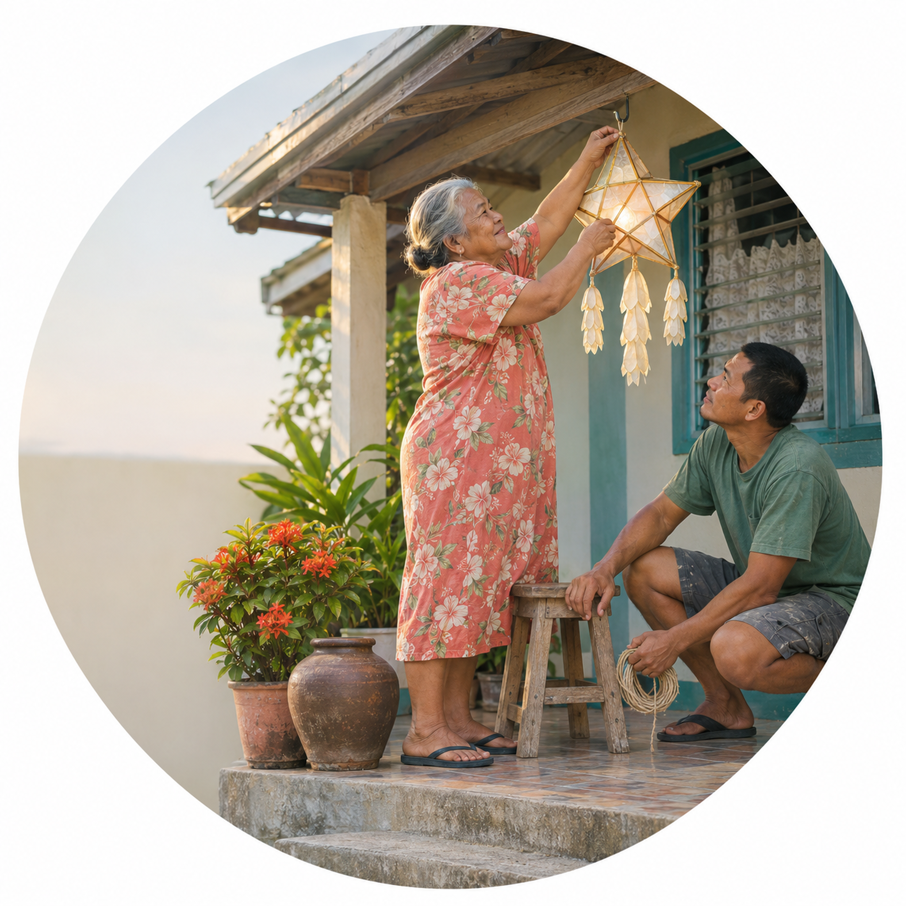
A Story From My ClinicIsang Kuwento Mula sa Aking KlinikaUsa ka Sugilanon Gikan sa Akong KlinikaMetung a Kuwentu Ibat king Klinika Ku
She had prepared for dialysis. She still needed time to take it inHanda na siya sa dialysis. Kinailangan pa rin niya ng panahon para tanggapin itoAndam na siya sa dialysis. Nanginahanglan gihapon siya og panahon aron dawaton kiniMakasadia ne king dialysis. Kailangan na pa murin ing panaun bang tanggapan ne
A few years ago, I told a patient that she would likely need dialysis someday. She took that conversation seriously. She had a graft placed for hemodialysis, and by the time we spoke again about starting, it was ready to use. She had also been taking her medicines and following the eating plan we worked out with her. With medical care and follow-up, she was able to go several more years before I recommended starting dialysis.Ilang taon na ang nakararaan, sinabi ko sa isang pasyente na malamang ay kakailanganin niya ang dialysis balang araw. Sineryoso niya ang usapang iyon. Nagpalagay siya ng graft para sa hemodialysis, at nang muli naming pag-usapan ang pagsisimula, handa na itong gamitin. Iniinom din niya ang kanyang mga gamot at sinusunod ang planong pagkain na binuo namin kasama siya. Sa tulong ng gamutan at regular na follow-up, lumipas pa ang ilang taon bago ko inirekomendang magsimula ng dialysis.Pipila ka tuig ang milabay, giingnan nako ang usa ka pasyente nga lagmit magkinahanglan siya og dialysis sa umaabot. Giseryoso niya kadtong panag-istorya. Nagpabutang siya og graft para sa hemodialysis, ug sa dihang nag-istorya mi pag-usab bahin sa pagsugod, andam na kining gamiton. Giinom usab niya ang iyang mga tambal ug gisunod ang plano sa pagkaon nga among gihimo uban kaniya. Tungod sa pag-atiman ug regular nga follow-up, milabay pa ang pipila ka tuig una nako girekomendar ang pagsugod sa dialysis.Mapilan nang banua ing milabas, sinabi ku king metung a pasyenti na malamang kailanganan ne ing dialysis balang aldo. Sineryosu ne ing pamisabi mi. Pepabili yang graft para king hemodialysis, at inyang pisabian mi ne naman ing pamagumpisa, makasadia ne iti bang gamitan. Iinuman na la murin deng panulu na at tutuki ne ing planu king pamangan a gewa mi kayabe na. Uli ning pamanulu at regular a follow-up, milabas pa ing mapilan a banua bayu ku inirekomenda ing pamagumpisa king dialysis.
At a later visit, I had to tell her that I thought it was time. She was losing weight. The itching was bothering her, and her blood tests showed that too much acid had built up in her blood. She also had severe anemia despite regular injections, and that needed urgent attention of its own. I was concerned about what could happen if she waited.Sa isang sumunod na konsulta, kinailangan kong sabihin sa kanya na sa tingin ko ay panahon na. Pumapayat siya. Pinahihirapan siya ng pangangati, at ipinakita ng kanyang mga blood test na sobra na ang asidong naipon sa kanyang dugo. Malala rin ang kanyang anemia kahit regular ang kanyang mga iniksyon, at kailangan iyon ng sariling agarang atensyon. Nag-alala ako sa maaaring mangyari kung maghihintay pa siya.Sa usa ka misunod nga konsulta, kinahanglan nakong isulti kaniya nga sa akong tan-aw, panahon na. Nagkaniwang siya. Gihasol siya sa katol, ug gipakita sa iyang mga blood test nga sobra na ang asido nga natigom sa iyang dugo. Grabe usab ang iyang anemia bisan regular ang iyang mga indyeksyon, ug nagkinahanglan kadto og kaugalingong dinaliang pagtagad. Nabalaka ko sa mahimong mahitabo kon maghulat pa siya.King metung a tinuking konsulta, kailangan kung sabian kaya na king lawe ku, oras na. Mamayat ya. Paghirapan ne ning gatal, at pepakit da reng blood test na na sobra ne ing acid a mitipun king daya na. Malala ya murin ing anemia na agyang regular la reng iniksyon na, at kailangan na niti ing sarili nang agad a atensyon. Mig-alala ku king malyaring malyari nung manaya ya pa.
She asked if she could put it off until after Christmas. She was so afraid of what dialysis meant that she wanted her children to decide. To her, starting dialysis felt like a death sentence. I’ve heard that fear from other patients, including people who have known for years that they might need treatment. Having an access ready can make it easier to start when the time comes. It can still be hard to hear that the time has come.Itinanong niya kung puwede itong ipagpaliban hanggang makalipas ang Pasko. Ganoon na lamang ang takot niya sa kahulugan ng dialysis kaya gusto niyang ang mga anak na niya ang magpasya. Para sa kanya, ang pagsisimula ng dialysis ay parang hatol ng kamatayan. Narinig ko na ang takot na iyan mula sa ibang pasyente, pati sa mga taong ilang taon nang alam na maaaring kailanganin nila ang gamutan. Mas madaling magsimula kapag handa na ang access pagdating ng panahon. Pero mahirap pa ring marinig na dumating na ang panahong iyon.Nangutana siya kon puwede ba kining i-uswag hangtod human sa Pasko. Hilabihan ang iyang kahadlok sa kahulogan sa dialysis mao nga gusto niya nga ang iyang mga anak na ang modesisyon. Para kaniya, ang pagsugod sa dialysis morag silot sa kamatayon. Nadungog na nako kanang kahadlok gikan sa ubang pasyente, lakip sa mga tawo nga dugay nang nasayod nga basin magkinahanglan sila og pagtambal. Mas sayon ang pagsugod kon andam na ang access inig-abot sa panahon. Apan lisod gihapon paminawon nga miabot na ang maong panahon.Kitang na nung malyari neng ipagpaliban anggang mayari ing Pasku. Masyadu yang tatakut king buri nang sabian ning dialysis, kaya buri na reng anak na ing mag-desisyun. Para kaya, ing pamagumpisa king dialysis balamu hatul ning kamatayan. Dimdam ku ne ing takut a ita kareng aliwang pasyenti, pati kareng taung mapilan nang banuang balu na malyari dang kailanganan ing pamanulu. Mas malagwa ing magumpisa nung makasadia ne ing access potang datang ne ing oras. Pero masakit ya pa murin damdaman na dinatang ne ing oras a ita.
I wanted her to know why I was recommending dialysis now. We had prepared early so that we would have a way to start when her kidney failure was causing problems we could no longer safely manage by waiting. I also wanted to hear what she was afraid of. Some people remember a relative who started dialysis when they were already very sick. Others remember how hard it was to find treatment or pay for it. Those experiences stay with families. Treatment and coverage have changed, and there are still real questions about cost, travel, fatigue, and how to fit dialysis into a week.Gusto kong malaman niya kung bakit ngayon ko inirerekomenda ang dialysis. Maaga kaming naghanda upang may paraan kaming makapagsimula kapag ang kanyang kidney failure ay nagdudulot na ng mga problemang hindi na ligtas na pangasiwaan sa paghihintay. Gusto ko ring marinig kung ano ang kinatatakutan niya. May mga taong naaalala ang kamag-anak na nagsimula ng dialysis noong malubha na ang lagay. Ang iba naman ay naaalala kung gaano kahirap humanap ng gamutan o bayaran ito. Nananatili sa mga pamilya ang mga karanasang iyon. Nagbago na ang gamutan at ang coverage, pero may totoong mga tanong pa rin tungkol sa gastos, biyahe, pagod, at kung paano isisingit ang dialysis sa isang linggo.Gusto nako nga masabtan niya kon ngano karon nako girekomendar ang dialysis. Sayo mi nga nangandam aron aduna mi paagi sa pagsugod kon ang iyang kidney failure nagdala na og mga problema nga dili na luwas nga atimanon pinaagi sa paghulat. Gusto usab nako madungog kon unsa ang iyang gikahadlokan. Ang uban makahinumdom sa paryente nga nagsugod og dialysis sa dihang grabe na kaayo ang sakit. Ang uban makahinumdom kon unsa kalisod ang pagpangita og pagtambal o pagbayad niini. Kanang mga kasinatian magpabilin sa mga pamilya. Nausab na ang pagtambal ug ang coverage, apan aduna gihapoy tinuod nga mga pangutana bahin sa gasto, biyahe, kakapoy, ug kon unsaon pagpahaom sa dialysis sa usa ka semana.Buri kung abalu na nung bakit ngeni ku irerekomenda ing dialysis. Maranun kaming migsadia bang atin kaming paralan a magumpisa nung ing kidney failure na magdala neng problema a e na ligtas a asikasuan king pamanaya. Buri ku murin damdaman nung nanu ing tatakutan na. Atin taung aalala da ing kamag-anak a migumpisang dialysis inyang malala ne ing lagay na. Deng aliwa naman, aalala da nung makananu kasakit ing manintun pamanulu o bayaran ya iti. Mananatili la king pamilya deng experience a reta. Mibayu ne ing pamanulu at ing coverage, pero atin pa muring tutung kutang tungkul king gastus, biyahe, pagal, at nung makananung isingit ing dialysis king metung a duminggu.
What helped her decide was talking about Christmas again. I told her that if we started treating the problems her kidney failure was causing, she might be eating better before Christmas. That was something she could picture. She agreed to start.Ang nakatulong sa kanyang magpasya ay nang pag-usapan naming muli ang Pasko. Sinabi ko sa kanya na kung sisimulan naming gamutin ang mga problemang dulot ng kanyang kidney failure, maaaring mas maganda na ang kanyang gana sa pagkain bago mag-Pasko. Iyon ay isang bagay na kaya niyang isipin. Pumayag siyang magsimula.Ang nakatabang kaniya sa pagdesisyon mao ang among pag-istorya pag-usab bahin sa Pasko. Giingnan nako siya nga kon sugdan namo pagtambal ang mga problema nga dala sa iyang kidney failure, basin mas maayo na ang iyang pagkaon sa dili pa ang Pasko. Butang kadto nga iyang mahanduraw. Miuyon siya nga mosugod.Ing sinaup kaya bang mag-desisyun, itang pisabian mi yang pasibayu ing Pasku. Sinabi ku kaya na nung umpisan mi lang ulunan deng problemang dala ning kidney failure na, malyaring mas masanting ne ing pamangan na bayu mag-Pasku. Ita metung a bage a agyu nang isipan. Minayun yang magumpisa.
When I say dialysis can be a new beginning, I mean there is still a life to plan for. I want to know what you hope to get back to and what would make treatment easier to live with. We can start with one thing that matters to you and talk about how to protect it.Kapag sinasabi kong ang dialysis ay maaaring maging bagong simula, ang ibig kong sabihin ay may buhay pa ring dapat paghandaan. Gusto kong malaman kung ano ang inaasam mong mabalikan at kung ano ang makapagpapagaan sa pamumuhay kasabay ng gamutan. Maaari tayong magsimula sa isang bagay na mahalaga sa iyo at pag-usapan kung paano ito poprotektahan.Kon moingon ko nga ang dialysis mahimong bag-ong sinugdanan, ang akong gipasabot mao nga aduna pay kinabuhi nga angay planohon. Gusto nako mahibaloan kon unsa ang imong gilaoman nga mabalikan ug unsa ang makapasayon sa pagkinabuhi uban sa pagtambal. Makasugod ta sa usa ka butang nga importante kanimo ug mag-istorya kon unsaon kini pagpanalipod.Potang sasabian kung ing dialysis malyari yang maging bayung umpisa, ing buri kung sabian atin pa muring bie a dapat planuan. Buri kung abalu nung nanu ing panenayan mung abalikan at nung nanu ing makapagaan king pamibie-bie kayabe ning pamanulu. Malyari tamung magumpisa king metung a bage a importanti keka at pisabian tamu nung makananu yang protektan.
💡
Three things to take with you todayTatlong bagay na dadalhin mo ngayong arawTulo ka butang nga imong dad-on karong adlawaAtlung bage a dalan mu ngening aldo
1. The reason dialysis was offered to you, in one sentence. 2. The number to call if something goes wrong, including after hours. 3. One part of ordinary life you want your team to help protect.1. Ang dahilan kung bakit inialok sa iyo ang dialysis, sa isang pangungusap. 2. Ang numerong tatawagan kapag may nangyaring hindi tama, kahit lampas na sa oras ng opisina. 3. Isang bahagi ng karaniwang buhay na gusto mong tulungang protektahan ng iyong team.1. Ang rason nganong gitanyag kanimo ang dialysis, sa usa ka pulong. 2. Ang numero nga tawagan kon adunay mahitabo nga dili maayo, bisan human sa oras sa opisina. 3. Usa ka bahin sa ordinaryong kinabuhi nga gusto nimong tabangan sa imong team nga mapanalipdan.1. Ing sangkan nung bakit inialuk de keka ing dialysis, king metung a sentence. 2. Ing numerung awsan nung atin e mayap a malyari, agyang mayari ne ing oras ning opisina. 3. Metung a parti ning karaniwan a bie a buri mung saupan nang protektan ning team mu.
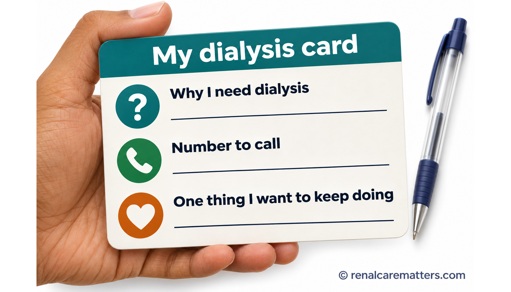
A card for your wallet: why dialysis was offered, the number to call, and one part of life you want to protect.Isang card para sa iyong pitaka: bakit inialok ang dialysis, ang numerong tatawagan, at isang bahagi ng buhay na gusto mong protektahan.Usa ka card para sa imong pitaka: nganong gitanyag ang dialysis, ang numero nga tawagan, ug usa ka bahin sa kinabuhi nga gusto nimong panalipdan.Metung a card para king pitaka mu: bakit inialuk ing dialysis, ing numerung awsan, at metung a parti ning bie a buri mung protektan.
The Big PictureAng Kabuuang LarawanAng Tibuok nga HulagwayIng Kabilugan a Larawan
What dialysis does, and what it does not doAno ang ginagawa ng dialysis, at ano ang hindi nito ginagawaUnsa ang buhaton sa dialysis, ug unsa ang dili niini buhatonNanu ing gagawan ning dialysis, at nanu ing e na gagawan
Think of your kidneys as two quiet workers who never go home. Around the clock they remove extra water, wash out waste, keep potassium and acid at safe levels, and make hormones that build red blood cells and keep bones strong. Dialysis is a borrowed filter that takes over the first three jobs in part. It does not make the hormones, and it works for a few hours at a time instead of all day. That is why medicines, food, and fluid still matter after you start.Isipin ang iyong mga bato (kidney) bilang dalawang tahimik na manggagawang hindi umuuwi. Araw at gabi, inaalis nila ang sobrang tubig, hinuhugasan palabas ang dumi ng katawan, pinananatiling ligtas ang antas ng potassium at asido, at gumagawa ng mga hormone na bumubuo ng pulang selula ng dugo at nagpapatibay ng buto. Ang dialysis ay hiram na salaan na umaako sa bahagi ng unang tatlong trabaho. Hindi ito gumagawa ng mga hormone, at gumagana lang ito nang ilang oras sa bawat pagkakataon sa halip na buong araw. Kaya mahalaga pa rin ang gamot, pagkain, at tubig kahit nagsimula ka na.Hunahunaa ang imong mga kidney isip duha ka hilom nga trabahante nga dili mopauli. Adlaw ug gabii, ilang kuhaon ang sobrang tubig, hugasan pagawas ang hugaw sa lawas, huptan nga luwas ang lebel sa potassium ug asido, ug maghimo og mga hormone nga mobuhat og pulang selula sa dugo ug mopalig-on sa bukog. Ang dialysis usa ka hinulaman nga salaan nga moako sa bahin sa unang tulo ka trabaho. Dili kini maghimo sa mga hormone, ug motrabaho lang kini og pipila ka oras matag higayon imbes sa tibuok adlaw. Mao nga importante gihapon ang tambal, pagkaon, ug tubig bisan nakasugod ka na.Isipan yu deng batu (kidney) yu antimong adwang tahimik a talapagobra a e muli. Aldo ampong bengi, lalako da ing sobrang danum, uugasan dang palwal ing dinat ning katawan, pananatilian dang ligtas ing level ning potassium at acid, at gagawa lang hormone a gagawa king malutung selula ning daya at magpasikan king butul. Ing dialysis metung yang andam a salaan (filter) a mangako king parti ning mumunang atlung obra. E ya gagawang hormone, at gagana ya mung mapilan a oras balang session, e mabilug a aldo. Kaya importanti la pa murin deng panulu, pamangan, at danum agyang migumpisa na ka.
In healthy people the kidneys filter the blood for all 168 hours of the week. In-center hemodialysis (HD) usually runs about 12 hours a week, in three sessions. Peritoneal dialysis (PD) works more gently but every day, using the lining of your belly as the filter. Either way, dialysis replaces only part of what healthy kidneys do. Between treatments, water, potassium, and acid build up again. Limits on salt, fluid, and some foods are there to keep that build-up small enough for the next treatment to clear safely.Sa malusog na tao, sinasala ng mga bato ang dugo sa buong 168 oras ng linggo. Ang hemodialysis (HD) sa center ay karaniwang mga 12 oras kada linggo, sa tatlong session. Ang peritoneal dialysis (PD) ay mas banayad pero araw-araw, gamit ang lining ng iyong tiyan bilang salaan. Alinman dito, bahagi lang ng ginagawa ng malusog na bato ang napapalitan ng dialysis. Sa pagitan ng mga gamutan, naiipon muli ang tubig, potassium, at asido. Ang mga limitasyon sa asin, tubig, at ilang pagkain ay para manatiling maliit ang naiipon upang ligtas itong maalis sa susunod na gamutan.Sa himsog nga tawo, ang mga kidney mosala sa dugo sa tibuok 168 ka oras sa semana. Ang hemodialysis (HD) sa center kasagaran mga 12 ka oras matag semana, sa tulo ka session. Ang peritoneal dialysis (PD) mas hinay apan adlaw-adlaw, gamit ang lining sa imong tiyan isip salaan. Bisan asa niini, bahin lang sa buhat sa himsog nga kidney ang mapulihan sa dialysis. Tali sa mga pagtambal, matigom pag-usab ang tubig, potassium, ug asido. Ang mga limitasyon sa asin, tubig, ug pipila ka pagkaon anaa aron magpabiling gamay ang matigom ug luwas kining makuha sa sunod nga pagtambal.King masalese a tau, deng batu sasalan da ing daya king mabilug a 168 oras ning duminggu. Ing hemodialysis (HD) king center karaniwan mga 12 oras kada duminggu, king atlung session. Ing peritoneal dialysis (PD) mas banayad ya pero aldo-aldo, gagamitan ne ing lining ning atyan mu antimong salaan. Nanu man karela, parti mu ning gagawan ning masalese a batu ing apapalitan ning dialysis. King pilatan da reng pamanulu, mitipun yang pasibayu ing danum, potassium, at acid. Deng limit king asin, danum, at mapilan a pamangan atiu la bang manatiling malati ing mitipun at ligtas yang malako king tutuking pamanulu.
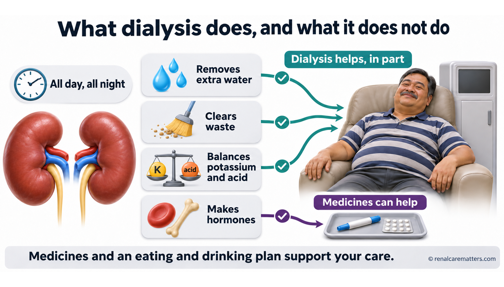
Healthy kidneys do four jobs all day. Dialysis takes over part of three of them: water, waste, and the balance of potassium and acid. The hormone job is covered by medicines such as injections for anemia and active vitamin D.Apat na trabaho ang ginagawa ng malusog na bato buong araw. Inaako ng dialysis ang bahagi ng tatlo: tubig, dumi, at balanse ng potassium at asido. Ang trabaho sa hormone ay sinasagot ng mga gamot gaya ng iniksyon para sa anemia at active vitamin D.Upat ka trabaho ang buhaton sa himsog nga kidney tibuok adlaw. Ang dialysis moako sa bahin sa tulo: tubig, hugaw, ug balanse sa potassium ug asido. Ang trabaho sa hormone tubagon sa mga tambal sama sa indyeksyon para sa anemia ug active vitamin D.Apat a obra ing gagawan ning masalese a batu mabilug a aldo. Ing dialysis aakuan ne ing parti ning atlu: danum, dinat, at balanse ning potassium at acid. Ing obra king hormone sasagutan da reng panulu antimo ing iniksyon para king anemia at active vitamin D.
HD
Hemodialysis
PD
Peritoneal dialysis
EPO
Erythropoietin, the hormone that tells the bone marrow to make red blood cells
Kidney jobTrabaho ng batoTrabaho sa kidneyObra ning batu
What dialysis doesAng ginagawa ng dialysisAng buhaton sa dialysisIng gagawan ning dialysis
What still needs attentionAng kailangan pa ring bantayanAng kinahanglan gihapon bantayanIng kailangan pa muring bantayan
Removes extra water and saltNag-aalis ng sobrang tubig at asinMokuha sa sobrang tubig ug asinLalako ne ing sobrang danum at asin
Pulls off fluid during each treatmentHinihigop ang tubig sa bawat gamutanMokuha og tubig matag pagtambalLalako neng danum balang pamanulu
Salt and fluid between treatments; your target ("dry") weightAsin at tubig sa pagitan ng gamutan; ang iyong target ("dry") weightAsin ug tubig tali sa pagtambal; ang imong target ("dry") weightAsin at danum king pilatan da reng pamanulu; ing target ("dry") weight mu
Clears waste such as ureaNag-aalis ng dumi gaya ng ureaMokuha sa hugaw sama sa ureaLalako ne ing dinat antimo ing urea
Clears a share of it, in burstsInaalis ang bahagi nito, paminsan-minsanMokuha og bahin niini, sa matag sessionLalako ne ing parti na, balang session
Coming to every session and staying the full timePagdalo sa bawat session at pagtapos ng buong orasPagtambong sa matag session ug pagkompleto sa tibuok orasIng pamanyatang king balang session at pamanyari king mabilug a oras
Keeps potassium and acid safePinananatiling ligtas ang potassium at asidoMohupot nga luwas ang potassium ug asidoPananatilian nang ligtas ing potassium at acid
Lowers potassium and corrects acidIbinababa ang potassium at itinatama ang asidoMopaubos sa potassium ug motul-id sa asidoPababan ne ing potassium at itutuid ne ing acid
Potassium in food; missed sessions raise the risk quicklyPotassium sa pagkain; mabilis tumaas ang panganib kapag may nalaktawang sessionPotassium sa pagkaon; dali motaas ang risgo kon adunay malaktawan nga sessionPotassium king pamangan; mabilis yang matas ing peligru nung atin milaktawan a session
Makes hormones for blood and boneGumagawa ng hormone para sa dugo at butoMaghimo og hormone para sa dugo ug bukogGagawa yang hormone para king daya at butul
Does not replace thisHindi nito napapalitanDili niini mapulihanE na apapalitan
Anemia treatment, vitamin D, phosphorus controlGamutan sa anemia, vitamin D, kontrol sa phosphorusPagtambal sa anemia, vitamin D, kontrol sa phosphorusPamanulu king anemia, vitamin D, kontrol king phosphorus
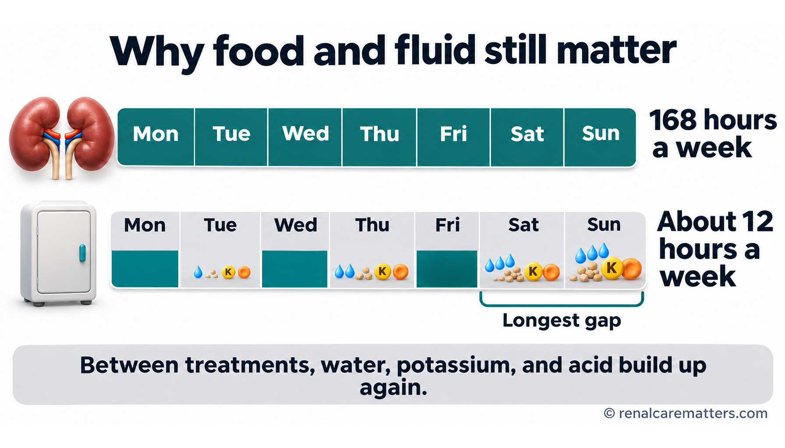
Healthy kidneys work all 168 hours of the week. Three hemodialysis sessions cover about 12. What builds up in between is why salt, fluid, and some foods still matter.Gumagana ang malusog na bato sa buong 168 oras ng linggo. Mga 12 oras lang ang tatlong session ng hemodialysis. Ang naiipon sa pagitan ang dahilan kung bakit mahalaga pa rin ang asin, tubig, at ilang pagkain.Ang himsog nga kidney motrabaho sa tibuok 168 ka oras sa semana. Mga 12 ka oras lang ang tulo ka session sa hemodialysis. Ang matigom sa tunga-tunga mao ang rason nganong importante gihapon ang asin, tubig, ug pipila ka pagkaon.Deng masalese a batu gagana la king mabilug a 168 oras ning duminggu. Mga 12 oras mu ing atlung session ning hemodialysis. Ing mitipun king pilatan da ya ing sangkan nung bakit importanti la pa murin ing asin, danum, at mapilan a pamangan.
🔬
“Is this permanent?” Ask which situation applies to you“Panghabambuhay na ba ito?” Itanong kung aling sitwasyon ang sa iyo“Permanente na ba ni?” Pangutan-a kon asa nga sitwasyon ang imoha“Pang-habambie ne ini?” Ikutang yu nung isanu ing sitwasyun yu
When chronic kidney disease (CKD) has slowly worn the kidneys down, dialysis is usually ongoing until a transplant or a change in the goals of care. A start in hospital can be different. After a severe infection, an operation, or another sudden illness, the cause may be acute kidney injury (AKI), and the kidneys sometimes recover enough for dialysis to stop. Ask your team: is this chronic kidney failure, AKI, or still uncertain, and who will check for recovery and when?Kapag unti-unting pinahina ng chronic kidney disease (CKD) ang mga bato, karaniwang tuloy-tuloy ang dialysis hanggang sa transplant o hanggang magbago ang layunin ng pangangalaga. Maaaring iba kapag sa ospital nagsimula. Pagkatapos ng malubhang impeksyon, operasyon, o iba pang biglaang sakit, maaaring acute kidney injury (AKI) ang sanhi, at minsan ay gumagaling nang sapat ang mga bato para maitigil ang dialysis. Itanong sa iyong team: chronic kidney failure ba ito, AKI, o hindi pa tiyak, at sino ang magbabantay kung gumagaling ito at kailan?Kon ang chronic kidney disease (CKD) hinay-hinay nga nagpaluya sa mga kidney, kasagaran padayon ang dialysis hangtod sa transplant o hangtod mausab ang tumong sa pag-atiman. Lahi tingali kon sa ospital nagsugod. Human sa grabeng impeksyon, operasyon, o laing kalit nga sakit, ang hinungdan mahimong acute kidney injury (AKI), ug usahay mamaayo og igo ang mga kidney aron mahunong ang dialysis. Pangutan-a ang imong team: chronic kidney failure ba ni, AKI, o dili pa sigurado, ug kinsa ang motan-aw kon nagkaayo ba ug kanus-a?Nung ing chronic kidney disease (CKD) dahan-dahan nong pepaynan deng batu, karaniwan tuluy-tuluy ing dialysis anggang king transplant o anggang mibayu ing layunin ning pamangalaga. Malyaring aliwa nung king ospital migumpisa. Kaybat ning malalang impeksyon, operasyon, o aliwang biglang sakit, malyaring acute kidney injury (AKI) ing sangkan, at neng kayi kakayap lang sapat deng batu bang ipatuknang ing dialysis. Ikutang yu king team yu: chronic kidney failure ya ini, AKI, o e pa siguradu, at ninu ing manalben nung kakayap ya at kapilan?
The DecisionAng DesisyonAng DesisyonIng Desisyun
Why now? When waiting becomes less safeBakit ngayon? Kapag hindi na ligtas ang paghihintayNgano karon? Kon dili na luwas ang paghulatBakit ngeni? Potang e ne ligtas ing pamanaya
I look at what has changed since your last visit and what we can still manage with medical treatment. When kidney failure is causing symptoms that are hard to control, acid levels remain too high despite treatment, or nutrition continues to worsen even with help, dialysis may become the safer next step. If I tell you that waiting is unsafe, ask me what I’m worried could happen and what I recommend we do today. If you want your family there, we can talk through it together and make sure your own questions and wishes are heard.Tinitingnan ko kung ano ang nagbago mula sa huli mong konsulta at kung ano pa ang kaya nating pangasiwaan sa gamot. Kapag ang kidney failure ay nagdudulot ng mga sintomas na mahirap kontrolin, nananatiling mataas ang asido kahit may gamutan, o patuloy na lumalala ang nutrisyon kahit may tulong, maaaring ang dialysis na ang mas ligtas na susunod na hakbang. Kapag sinabi ko sa iyo na hindi ligtas ang maghintay, itanong mo sa akin kung ano ang ikinababahala kong mangyari at kung ano ang inirerekomenda kong gawin natin ngayon. Kung gusto mong kasama ang pamilya mo, puwede nating pag-usapan ito nang sama-sama at tiyaking napapakinggan ang sarili mong mga tanong at kagustuhan.Tan-awon nako kon unsa ang nausab sukad sa imong kataposang konsulta ug kon unsa pa ang atong maatiman pinaagi sa tambal. Kon ang kidney failure nagdala og mga sintomas nga lisod kontrolon, taas gihapon ang asido bisan adunay pagtambal, o padayon nga mograbe ang nutrisyon bisan adunay tabang, ang dialysis mahimong mas luwas nga sunod nga lakang. Kon moingon ko nimo nga dili luwas ang paghulat, pangutan-a ko kon unsa ang akong gikabalak-an nga mahitabo ug unsa ang akong girekomendar nga atong buhaton karon. Kon gusto nimo nga anaa ang imong pamilya, mahimo natong hisgotan kini nga magkauban ug siguroon nga madungog ang imong kaugalingong mga pangutana ug gusto.Lalawan ku nung nanu ing mibayu manibat king tauli mung konsulta at nung nanu pa ing agyu tamung asikasuan king panulu. Nung ing kidney failure magdala yang sintomas a masakit kontrolan, matas ya pa murin ing acid agyang atin pamanulu, o tuluy-tuluy yang lalala ing nutrisyon agyang atin saup, malyaring ing dialysis ne ing mas ligtas a tutuking hakbang. Nung sabian ku keka na e ligtas ing manaya, ikutang mu kaku nung nanu ing pag-alalanan kung malyari at nung nanu ing irerekomenda kung gawan tamu ngeni. Nung buri mung kayabe me ing pamilya mu, malyari tamung pisabian iti a abe-abe at siguraduan tamung daramdaman la reng sarili mung kutang at buri.
Here is the body’s reasoning behind that. When the kidneys can no longer remove acid, the blood turns slightly acidic, and the body breaks down muscle to cope. Built-up waste dulls appetite and can cause nausea and itching. Extra fluid strains the heart and lungs. Medicines and diet can hold these problems back for a long time, sometimes for years. Dialysis becomes the next step when they stop responding, not when one lab number crosses a line.Ito ang paliwanag ng katawan sa likod nito. Kapag hindi na kayang alisin ng mga bato ang asido, bahagyang nagiging maasido ang dugo, at sinisira ng katawan ang kalamnan para makaagapay. Ang naipong dumi ay nagpapahina ng gana sa pagkain at maaaring magdulot ng pagduduwal at pangangati. Ang sobrang tubig ay nagpapahirap sa puso at baga. Kayang pigilan ng gamot at tamang pagkain ang mga problemang ito nang matagal, minsan ay ilang taon. Nagiging susunod na hakbang ang dialysis kapag hindi na tumutugon ang mga ito, hindi dahil lumampas sa isang linya ang isang resulta ng laboratoryo.Mao kini ang pasabot sa lawas luyo niana. Kon ang mga kidney dili na makakuha sa asido, ang dugo mahimong gamay nga aslom, ug gub-on sa lawas ang kaunoran aron makasagubang. Ang natigom nga hugaw mopaluya sa gana sa pagkaon ug makapahinabo og kasukaon ug katol. Ang sobrang tubig mopalisod sa kasingkasing ug baga. Ang tambal ug hustong pagkaon makapugong niining mga problema sa dugay nga panahon, usahay sa daghang tuig. Ang dialysis mahimong sunod nga lakang kon dili na kini motubag, dili tungod kay milapas sa usa ka linya ang usa ka resulta sa laboratoryo.Ini ing paliwanag ning katawan king gulut na nita. Nung e no agyung lakwan deng batu ing acid, maging bahagyang maaslam ing daya, at sisiran ne ning katawan ing kalamnan (muscle) bang makaagapay. Ing mitipun a dinat papaynan ne ing gana king pamangan at malyari yang magdalang pamandiri at gatal. Ing sobrang danum papasakitan ne ing pusu at baga. Agyu dang pigilan deng panulu at ustung pamangan deng problemang deti king makaba a panaun, neng kayi mapilan a banua. Maging tutuking hakbang ing dialysis nung e na la tutugun deti, e uling linampas king metung a linya ing metung a resulta ning laboratoryu.
When the kidneys can no longer clear acid, waste, and fluid, muscle, appetite, and the heart are affected. Medicines and diet hold this back for a time; dialysis is the next step when they no longer can.Kapag hindi na kayang alisin ng bato ang asido, dumi, at tubig, naaapektuhan ang kalamnan, gana sa pagkain, at puso. Napipigilan ito ng gamot at tamang pagkain nang ilang panahon; ang dialysis ang susunod na hakbang kapag hindi na nila kaya.Kon ang kidney dili na makakuha sa asido, hugaw, ug tubig, maapektohan ang kaunoran, gana sa pagkaon, ug kasingkasing. Mapugngan kini sa tambal ug hustong pagkaon sulod sa pipila ka panahon; ang dialysis mao ang sunod nga lakang kon dili na nila makaya.Nung e na agyung lakwan ning batu ing acid, dinat, at danum, maapektuhan ing kalamnan, gana king pamangan, at pusu. Apipigilan de iti deng panulu at ustung pamangan king mapilan a panaun; ing dialysis ya ing tutuking hakbang nung e da na agyu.
✅
Questions that make the reason clearMga tanong na nagpapalinaw ng dahilanMga pangutana nga makapatin-aw sa rasonDeng kutang a magpalino king sangkan
Which symptom, exam finding, or blood test led to this recommendation? What do you expect dialysis to change, and by when? What could happen if I wait two weeks, or a month? Is there anything else we should treat at the same time, such as anemia?Aling sintomas, nakita sa eksaminasyon, o blood test ang nagbunsod sa rekomendasyong ito? Ano ang inaasahan mong mababago ng dialysis, at kailan? Ano ang maaaring mangyari kung maghihintay ako ng dalawang linggo, o isang buwan? May iba pa ba tayong dapat gamutin nang sabay, gaya ng anemia?Unsang sintomas, nakita sa eksaminasyon, o blood test ang hinungdan niining rekomendasyon? Unsa ang imong gilaoman nga mausab sa dialysis, ug kanus-a? Unsa ang mahimong mahitabo kon maghulat ko og duha ka semana, o usa ka bulan? Aduna pa bay lain nga angay natong tambalan dungan niini, sama sa anemia?Isanung sintomas, ikit king eksaminasyun, o blood test ing sangkan ning rekomendasyun a ini? Nanu ing panenayan mung mabayu uli ning dialysis, at kapilan? Nanu ing malyaring malyari nung manaya kung adwang duminggu, o metung a bulan? Atin pa bang aliwang dapat tamung ulunan a kasabe na, antimo ing anemia?
The evidence supports this way of deciding. In a large trial in Australia and New Zealand, people with advanced kidney disease who were assigned to start dialysis earlier, at a higher level of kidney function, did not live longer than those assigned to wait for a lower level, and most people in the waiting group ended up starting because symptoms appeared. Timing guided by how you feel and what your tests show, under close follow-up, is the approach international guidelines recommend. The full reasoning is in When Should Dialysis Start?Sinusuportahan ng ebidensya ang ganitong paraan ng pagpapasya. Sa isang malaking pag-aaral sa Australia at New Zealand, ang mga taong may malalang sakit sa bato na itinalagang magsimula ng dialysis nang mas maaga, habang mas mataas pa ang paggana ng bato, ay hindi nabuhay nang mas matagal kaysa sa mga itinalagang maghintay sa mas mababang antas, at karamihan sa grupong naghintay ay nagsimula rin dahil lumitaw ang mga sintomas. Ang pagtatakda ng panahon batay sa nararamdaman mo at sa ipinapakita ng iyong mga test, sa ilalim ng masusing follow-up, ang paraang inirerekomenda ng mga pandaigdigang alituntunin. Ang buong paliwanag ay nasa When Should Dialysis Start?Gisuportahan sa ebidensya kining paagi sa pagdesisyon. Sa usa ka dakong pagtuon sa Australia ug New Zealand, ang mga tawo nga adunay grabeng sakit sa kidney nga gi-assign nga mosugod og dialysis nga mas sayo, samtang mas taas pa ang function sa kidney, wala mabuhi og mas dugay kay sa mga gi-assign nga maghulat sa mas ubos nga lebel, ug kadaghanan sa grupong naghulat misugod gihapon tungod kay mitungha ang mga sintomas. Ang pagtakda sa panahon base sa imong gibati ug sa gipakita sa imong mga test, ubos sa hugot nga follow-up, mao ang paagi nga girekomendar sa mga internasyonal nga giya. Ang tibuok pasabot anaa sa When Should Dialysis Start?Susuportan ne ning ebidensya ing paralan a ini king pamag-desisyun. King metung a maragul a pamag-aral king Australia at New Zealand, deng taung atin malalang sakit king batu a mi-assign magumpisang dialysis a mas maranun, kabang mas matas pa ing function ning batu, e la mibie mas makaba kesa kareng mi-assign manaya king mas mababang level, at keraklan king grupung minaya migumpisa la murin uling linto la reng sintomas. Ing pamamili king oras base king daramdaman mu at king papakit da reng test mu, lalam ning masalese a follow-up, ya ing paralan a irerekomenda da reng international a guideline. Ing mabilug a paliwanag atiu king When Should Dialysis Start?
⛔
If your team says waiting is dangerousKapag sinabi ng iyong team na delikado ang maghintayKon moingon ang imong team nga peligroso ang paghulatNung sabian ning team mu na delikadu ing manaya
Severe breathlessness from fluid, very high potassium, confusion from waste build-up, or inflammation around the heart are emergencies. In these situations, follow your treating team’s urgent instructions. The conversation about long-term plans continues after you are safe.Ang matinding hingal dahil sa tubig, napakataas na potassium, pagkalito dahil sa naipong dumi, o pamamaga sa paligid ng puso ay mga emergency. Sa ganitong sitwasyon, sundin ang agarang tagubilin ng gumagamot sa iyo. Itutuloy ang usapan tungkol sa pangmatagalang plano kapag ligtas ka na.Ang grabeng paghangos tungod sa tubig, taas kaayo nga potassium, kalibog tungod sa natigom nga hugaw, o paghubag libot sa kasingkasing mga emergency. Niining mga sitwasyon, sunda ang dinaliang instruksyon sa nagtambal kanimo. Ang panag-istorya bahin sa dugay nga plano mapadayon kon luwas ka na.Ing masyadung hingal uli ning danum, masyadung matas a potassium, pangalitu uli ning mitipun a dinat, o pamamaga king palibut ning pusu, emergency la reti. Kareng sitwasyun a reti, tukian yu ing agad a tagubilin ning manulu kekayu. Isundu ing pamisabi tungkul king pang-makaba a planu potang ligtas na kayu.
What to ExpectAno ang AasahanUnsa ang PaabutonNanu ing Panenayan
What may improve, and what may take more workAno ang maaaring bumuti, at ano ang mangangailangan pa ng dagdag na pagsisikapUnsa ang mahimong moarang-arang, ug unsa ang nagkinahanglan pa og dugang paningkamotNanu ing malyaring sumanting, at nanu ing mangailangan pang dagdag a pamagsikap
Dialysis works best on the problems it directly removes. Breathlessness and swelling caused by extra fluid often ease within the first sessions. Nausea and poor appetite caused by waste build-up commonly improve over the following weeks, and high potassium and acid come under control. Other symptoms have more than one cause, so they improve more slowly or need their own treatment.Pinakamabisa ang dialysis sa mga problemang tuwiran nitong inaalis. Ang hingal at pamamanas na dulot ng sobrang tubig ay kadalasang gumagaan sa mga unang session. Ang pagduduwal at kawalan ng gana dahil sa naipong dumi ay karaniwang bumubuti sa mga susunod na linggo, at nakokontrol ang mataas na potassium at asido. Ang ibang sintomas ay may higit sa isang sanhi, kaya mas mabagal ang pagbuti o kailangan ng sariling gamutan.Labing epektibo ang dialysis sa mga problema nga direkta niining kuhaon. Ang paghangos ug paghubag tungod sa sobrang tubig kasagaran mohupay sa unang mga session. Ang kasukaon ug kawalay gana tungod sa natigom nga hugaw kasagaran moarang-arang sa mosunod nga mga semana, ug makontrol ang taas nga potassium ug asido. Ang ubang sintomas adunay labaw sa usa ka hinungdan, mao nga mas hinay ang pag-arang-arang o nagkinahanglan og kaugalingong pagtambal.Pekamabisa ya ing dialysis kareng problemang diretsu nong lalako. Ing hingal at pamamanas uli ning sobrang danum karaniwan gagaan la kareng mumunang session. Ing pamandiri at kawalan gana uli ning mitipun a dinat karaniwan sumanting la kareng tutuking duminggu, at makontrol ing matas a potassium at acid. Deng aliwang sintomas atin lang igit king metung a sangkan, kaya mas mabagal ing pamanyanting da o kailangan da ing sarili dang pamanulu.
Often improvesKadalasang bumubutiKasagaran moarang-arangKaraniwan sumanting
May persist or have other causesMaaaring manatili o may ibang sanhiMahimong magpabilin o adunay laing hinungdanMalyaring manatili o atin aliwang sangkan
What helpsAno ang nakatutulongUnsa ang makatabangNanu ing makasaup
Breathlessness and swelling from fluidHingal at pamamanas dahil sa tubigPaghangos ug paghubag tungod sa tubigHingal at pamamanas uli ning danum
Tiredness, especially after HDPagkapagod, lalo na pagkatapos ng HDKakapoy, labi na human sa HDPagal, lalu na kaybat ning HD
Tell the team how long it takes to recover after each sessionSabihin sa team kung gaano katagal bago ka makabawi pagkatapos ng bawat sessionSultihi ang team kon unsa kadugay una ka makabawi human sa matag sessionSabian yu king team nung makananu kabang bayu kayu makabawi kaybat ning balang session
Nausea and poor appetite from waste build-upPagduduwal at kawalan ng gana dahil sa naipong dumiKasukaon ug kawalay gana tungod sa natigom nga hugawPamandiri at kawalan gana uli ning mitipun a dinat
Itching, poor sleep, cramps, restless legsPangangati, hirap sa pagtulog, pulikat, hindi mapakaling bintiKatol, lisod matulog, kalambre, dili mahimutang nga bitiisGatal, masakit a pamanudtud, pulikat, e mipakaling bitis
Each has specific treatments; ask for a review of the causeMay tiyak na gamutan ang bawat isa; ipasuri ang sanhiAdunay piho nga tambal ang matag usa; ipasusi ang hinungdanAtin yang tiyak a pamanulu ing balang metung; ipasuri yu ing sangkan
High potassium and acid in the bloodMataas na potassium at asido sa dugoTaas nga potassium ug asido sa dugoMatas a potassium at acid king daya
Low mood, worry, changes in intimacyLungkot, pag-aalala, pagbabago sa pagtatalikKasubo, kabalaka, kausaban sa pakighilawasLungkut, pamag-alala, pamagbayu king pamakiabe king asawa
These are common and treatable; counseling and medicines both helpKaraniwan ito at nagagamot; nakatutulong ang counseling at gamotKasagaran kini ug matambalan; makatabang ang counseling ug tambalKaraniwan la reti at aulu la; makasaup ing counseling at panulu
Studies that followed older adults in Europe through the start of dialysis found the same pattern. In the year before starting, symptoms piled up and quality of life fell steadily. In the year after, symptoms on average stopped getting worse and eased a little, and quality of life stopped falling. It did not, on average, return to where it had been. A fair way to say it: dialysis usually stops the slide; climbing back takes the rest of your care, which means nutrition, anemia treatment, activity, sleep, and mood. These studies describe groups, not you, and they had no comparison group of similar people who did not start.Ganito rin ang nakita sa mga pag-aaral na sumubaybay sa mga nakatatanda sa Europa sa pagsisimula ng dialysis. Sa taon bago magsimula, dumami ang mga sintomas at tuloy-tuloy na bumaba ang kalidad ng buhay. Sa sumunod na taon, karaniwang huminto ang paglala ng mga sintomas at bahagyang gumaan, at huminto ang pagbaba ng kalidad ng buhay. Pero karaniwan, hindi ito bumalik sa dati. Isang makatarungang paglalarawan: karaniwang pinipigil ng dialysis ang pagdausdos; ang pag-akyat pabalik ay nangangailangan ng iba pang bahagi ng iyong pangangalaga, ibig sabihin ay nutrisyon, gamutan sa anemia, pagkilos, tulog, at kalooban. Mga grupo ang inilalarawan ng mga pag-aaral na ito, hindi ikaw, at wala silang pinaghambingang grupo ng katulad na mga taong hindi nagsimula.Mao usab kini ang nakita sa mga pagtuon nga misubay sa mga tigulang sa Europa sa pagsugod sa dialysis. Sa tuig sa wala pa magsugod, midaghan ang mga sintomas ug padayon nga mius-os ang kalidad sa kinabuhi. Sa misunod nga tuig, sa kasagaran mihunong ang paggrabe sa mga sintomas ug mihupay og gamay, ug mihunong ang pag-us-os sa kalidad sa kinabuhi. Apan sa kasagaran, wala kini mobalik sa kanhi. Usa ka makiangayon nga paghulagway: ang dialysis kasagaran mopahunong sa pagdailos; ang pagsaka balik nagkinahanglan sa ubang bahin sa imong pag-atiman, nga mao ang nutrisyon, pagtambal sa anemia, kalihokan, tulog, ug pagbati. Kini nga mga pagtuon naghulagway og mga grupo, dili ikaw, ug wala silay gikomparahan nga grupo sa susamang mga tawo nga wala magsugod.Makanyan murin ing ikit kareng pamag-aral a tinuki kareng makatua king Europa king pamagumpisa king dialysis. King banua bayu magumpisa, dinakal la reng sintomas at tuluy-tuluy yang mibaba ing kalidad ning bie. King tinuking banua, karaniwan tinuknang ing pamanlala da reng sintomas at ginaan lang bahagya, at tinuknang ing pamanibaba ning kalidad ning bie. Pero karaniwan, e ya mibalik king sadya. Metung a patas a pamaglarawan: ing dialysis karaniwan patuknangan ne ing pamandausdus; ing pamanukiat pabalik kailangan ne ing aliwang parti ning pamangalaga yu, buri nang sabian nutrisyon, pamanulu king anemia, pamangimut, tudtud, at lub. Grupu la reng ilalarawan da reng pamag-aral a reti, e ika, at ala lang pikumparan a grupu da reng kalupa dang taung e migumpisa.
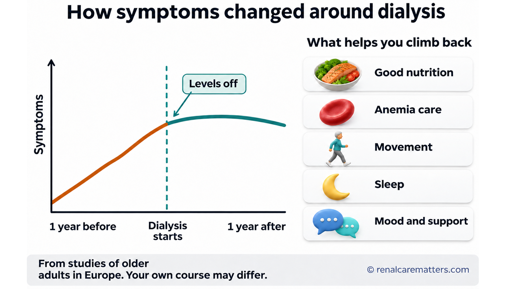
In a European study of older adults, symptom burden rose in the year before dialysis and leveled off in the year after. Getting stronger from there depends on nutrition, anemia care, movement, sleep, and mood support.Sa isang pag-aaral sa Europa sa mga nakatatanda, tumaas ang bigat ng mga sintomas sa taon bago ang dialysis at pumantay sa sumunod na taon. Ang paglakas mula roon ay nakasalalay sa nutrisyon, gamutan sa anemia, pagkilos, tulog, at suporta sa kalooban.Sa usa ka pagtuon sa Europa sa mga tigulang, misaka ang kabug-at sa mga sintomas sa tuig sa wala pa ang dialysis ug mipatag sa misunod nga tuig. Ang pagkusog gikan didto nagdepende sa nutrisyon, pagtambal sa anemia, kalihokan, tulog, ug suporta sa pagbati.King metung a pamag-aral king Europa kareng makatua, mitas ing bayat da reng sintomas king banua bayu ing dialysis at mipantay king tinuking banua. Ing pamanyikan manibat karin makasalale king nutrisyon, pamanulu king anemia, pamangimut, tudtud, at suporta king lub.
DSI
Dialysis Symptom Index, a 30-symptom questionnaire
💡
Track symptoms so the team can act on themI-tala ang mga sintomas upang makakilos ang teamIlista ang mga sintomas aron makalihok ang teamIlista yu la reng sintomas bang makakimut ing team
Write down when a symptom happens (during treatment, that evening, the next morning) and which activity it stops, such as cooking, working, or walking to the gate. “I am tired” is hard to treat. “I cannot stand long enough to cook dinner on dialysis days” gives the team something to fix. A symptom that persists, worsens, or limits daily life deserves a review, because pain and fatigue in people new to hemodialysis are linked with a higher chance of hospital admission.Isulat kung kailan nangyayari ang sintomas (habang ginagamot, kinagabihan, kinaumagahan) at kung aling gawain ang napipigilan nito, gaya ng pagluluto, pagtatrabaho, o paglalakad hanggang gate. Mahirap gamutin ang “Pagod ako.” Ang “Hindi ako makatayo nang matagal para magluto ng hapunan tuwing araw ng dialysis” ay nagbibigay sa team ng bagay na maaayos. Ang sintomas na nananatili, lumalala, o humahadlang sa pang-araw-araw na buhay ay dapat masuri, dahil ang pananakit at pagkapagod sa mga bagong nagsisimula ng hemodialysis ay may kaugnayan sa mas mataas na tsansang maospital.Isulat kon kanus-a mahitabo ang sintomas (samtang gitambalan, nianang gabhiona, pagkaugma sa buntag) ug kon unsang kalihokan ang mapugngan niini, sama sa pagluto, pagtrabaho, o paglakaw padulong sa gate. Lisod tambalan ang “Kapoy ko.” Ang “Dili ko makabarog og dugay aron magluto og panihapon sa mga adlaw sa dialysis” maghatag sa team og butang nga maayo. Ang sintomas nga magpabilin, mograbe, o makababag sa adlaw-adlaw nga kinabuhi angay susihon, kay ang sakit ug kakapoy sa mga bag-o pa sa hemodialysis nalambigit sa mas taas nga posibilidad nga maospital.Isulat yu nung kapilan malyari ing sintomas (kabang gagamutan, kanitang bengi, kabukasan a abak) at nung isanung gawain ing apipigilan na, antimo ing pamaglutu, pamagobra, o pamamalakad anggang gate. Masakit yang ulunan ing “Mapagal ku.” Ing “E ku makatalakad makaba bang maglutung apunan neng aldo ning dialysis” mamye yang bage king team a ayusan da. Ing sintomas a mananatili, lalala, o sasabat king aldo-aldong bie dapat yang masuri, uling ing sakit at pagal kareng bayu pa king hemodialysis atin yang kaugnayan king mas matas a tsansang ma-ospital.
For the curious: what the studies measuredPara sa mausisa: ano ang sinukat ng mga pag-aaralPara sa gustong masayod: unsa ang gisukod sa mga pagtuonPara kareng buring makabalu: nanu ing sinukat da reng pamag-aral
Symptoms (EQUAL study, 456 people, average age 76). On a 0-to-150 symptom scale, burden rose 13.3 points in the year before dialysis and changed by −5.9 points in the year after, a change the researchers described as stabilization. Fatigue eased somewhat; sexual symptoms did not.Mga sintomas (EQUAL study, 456 katao, karaniwang edad 76). Sa iskalang 0 hanggang 150, tumaas nang 13.3 puntos ang bigat ng sintomas sa taon bago ang dialysis at nagbago nang −5.9 puntos sa sumunod na taon, na inilarawan ng mga mananaliksik bilang pagpantay. Bahagyang gumaan ang pagkapagod; ang mga sintomas sa pagtatalik ay hindi.Mga sintomas (EQUAL study, 456 ka tawo, kasagarang edad 76). Sa sukdanan nga 0 hangtod 150, misaka og 13.3 puntos ang kabug-at sa sintomas sa tuig sa wala pa ang dialysis ug nausab og −5.9 puntos sa misunod nga tuig, nga gihulagway sa mga tigdukiduki isip pagpatag. Mihupay og gamay ang kakapoy; ang mga sintomas sa pakighilawas wala.Deng sintomas (EQUAL study, 456 katau, karaniwan a edad 76). King scale a 0 anggang 150, mitas yang 13.3 puntus ing bayat ning sintomas king banua bayu ing dialysis at mibayu yang −5.9 puntus king tinuking banua, a linarawan da reng researcher antimong pamamantay. Ginaan yang bahagya ing pagal; deng sintomas king pamakiabe king asawa, ali.
Quality of life (same study, 457 people). Mental and physical scores each fell by more than 10 points on a 100-point scale in the year before, then changed little in the year after (+2 and −2 points, with wide uncertainty either way).Kalidad ng buhay (parehong pag-aaral, 457 katao). Bumaba nang mahigit 10 puntos ang mental at pisikal na iskor sa iskalang 100 puntos sa taon bago magsimula, at halos hindi nagbago sa sumunod na taon (+2 at −2 puntos, na malawak ang kawalang-katiyakan sa magkabilang direksyon).Kalidad sa kinabuhi (parehas nga pagtuon, 457 ka tawo). Ang mental ug pisikal nga iskor mius-os og sobra sa 10 puntos sa sukdanan nga 100 puntos sa tuig sa wala pa magsugod, ug hapit wala mausab sa misunod nga tuig (+2 ug −2 puntos, nga lapad ang kawalay kasigurohan sa duha ka direksyon).Kalidad ning bie (pareu a pamag-aral, 457 katau). Ing mental at pisikal a score mibaba lang igit 10 puntus king scale a 100 puntus king banua bayu magumpisa, at halus e la mibayu king tinuking banua (+2 at −2 puntus, a malapad ing e kasiguraduan king adwang direksyun).
Treating symptoms works (TĀCcare trial, 160 people on hemodialysis). A program of talk therapy by video call, with medicines when needed, reduced fatigue and pain within three months compared with general health education.Epektibo ang paggamot sa mga sintomas (TĀCcare trial, 160 katao sa hemodialysis). Isang programa ng talk therapy sa pamamagitan ng video call, na may gamot kapag kailangan, ang nagpabawas ng pagkapagod at pananakit sa loob ng tatlong buwan kumpara sa pangkalahatang edukasyong pangkalusugan.Epektibo ang pagtambal sa mga sintomas (TĀCcare trial, 160 ka tawo sa hemodialysis). Usa ka programa sa talk therapy pinaagi sa video call, nga adunay tambal kon gikinahanglan, mipakunhod sa kakapoy ug sakit sulod sa tulo ka bulan kon itandi sa kinatibuk-ang edukasyon sa panglawas.Epektibu ing pamanulu kareng sintomas (TĀCcare trial, 160 katau king hemodialysis). Metung a programa ning talk therapy king video call, a atin panulu nung kailangan, pepababan ne ing pagal at sakit kilub ning atlung bulan kumpara king pangkabilugan a health education.
Day OneUnang ArawUnang AdlawMumunang Aldo
What the first treatment may feel likeAno ang maaaring maramdaman sa unang gamutanUnsa ang mahimong bation sa unang pagtambalNanu ing malyaring apakiramdaman king mumunang pamanulu
For hemodialysis, the team will check your weight, blood pressure and access. You can ask what they’re watching and how long your session is scheduled to take. Tell a nurse right away if you feel dizzy, nauseated, short of breath or develop cramps or pain. Arrange a ride and leave some time to rest if you can. If you’re starting peritoneal dialysis, ask who will train you, how supplies will arrive, and whom to call after hours. It’s common to have questions or feel upset. Ask your team if you can speak with a social worker or someone who has been through a similar start.Para sa hemodialysis, susuriin ng team ang iyong timbang, presyon ng dugo, at access. Maaari mong itanong kung ano ang binabantayan nila at gaano katagal ang nakatakdang session mo. Sabihin agad sa nurse kung nahihilo ka, nasusuka, hinihingal, o nagkakaroon ng pulikat o pananakit. Mag-ayos ng masasakyan at maglaan ng oras para magpahinga kung kaya. Kung peritoneal dialysis ang sisimulan mo, itanong kung sino ang magtuturo sa iyo, paano darating ang mga supply, at sino ang tatawagan lampas sa oras ng opisina. Karaniwan ang magkaroon ng mga tanong o makaramdam ng sama ng loob. Itanong sa iyong team kung maaari kang makipag-usap sa isang social worker o sa taong dumaan na sa katulad na pagsisimula.Para sa hemodialysis, susihon sa team ang imong timbang, presyon sa dugo, ug access. Mahimo kang mangutana kon unsa ang ilang gibantayan ug unsa kadugay ang imong session. Sultihi dayon ang nurse kon malipong ka, kasukaon, maglisod og ginhawa, o adunay kalambre o sakit. Paghikay og masakyan ug paggahin og panahon sa pagpahulay kon mahimo. Kon peritoneal dialysis ang imong sugdan, pangutan-a kon kinsa ang motudlo kanimo, unsaon pag-abot sa mga supply, ug kinsa ang tawagan human sa oras sa opisina. Kasagaran ang adunay mga pangutana o mobati og kaguol. Pangutan-a ang imong team kon mahimo ka bang makig-istorya sa usa ka social worker o sa tawo nga nakaagi na og susamang pagsugod.Para king hemodialysis, suriin ne ning team ing timbang yu, presyon ning daya, at access. Malyari yung ikutang nung nanu ing babanten da at makananu kakaba ing session yu. Sabian yu agad king nurse nung maliliu kayu, mamandiri, hihingalan, o atin kayung pulikat o sakit. Mag-ayus kayung saken at maglaan kayung oras bang magpaynawa nung agyu. Nung peritoneal dialysis ing umpisan yu, ikutang yu nung ninu ing manuru kekayu, makananu lang datang deng supply, at ninu ing awsan nung mayari ne ing oras ning opisina. Karaniwan ing atin kutang o makaramdam lungkut. Ikutang yu king team yu nung malyari kayung makisabi king metung a social worker o king taung dinalan ne king kalupang pamagumpisa.
Before: you are weighed, your blood pressure is taken, and the nurse checks your fistula, graft, or catheter. Bring your medicine list and a light snack if your unit allows eating.Bago: titimbangin ka, kukunin ang presyon ng iyong dugo, at susuriin ng nurse ang iyong fistula, graft, o catheter. Dalhin ang listahan ng iyong mga gamot at magaang meryenda kung pinapayagan ng unit ang pagkain.Sa dili pa: timbangon ka, kuhaon ang presyon sa imong dugo, ug susihon sa nurse ang imong fistula, graft, o catheter. Dad-a ang lista sa imong mga tambal ug gaan nga snack kon gitugotan sa unit ang pagkaon.Bayu: timbangan da kayu, kunan de ing presyon ning daya yu, at suriin ne ning nurse ing fistula, graft, o catheter yu. Dalan ye ing listaan da reng panulu yu at mayan a merienda nung payagan ning unit ing pamangan.
During: your blood travels through a filter and returns to you. First sessions are often shorter and gentler on purpose, so your body can adjust. You can read, sleep, or talk.Habang ginagawa: dumadaan ang iyong dugo sa isang salaan at bumabalik sa iyo. Sadyang mas maikli at mas banayad ang mga unang session para makasanayan ng iyong katawan. Maaari kang magbasa, matulog, o makipagkuwentuhan.Samtang gihimo: ang imong dugo moagi sa usa ka salaan ug mobalik kanimo. Ang unang mga session tinuyo nga mas mubo ug mas hinay aron makaanad ang imong lawas. Mahimo kang magbasa, matulog, o makig-istorya.Kabang gagawan: ing daya yu dadalan ya king metung a salaan at babalik ya kekayu. Deng mumunang session sadya lang mas makuyad at mas banayad bang makasane ing katawan yu. Malyari kayung mamasa, matudtud, o makikuwentu.
After: you are weighed again and the access is checked for bleeding. Many people feel washed out for a few hours. Note how long it takes before you feel ready for your usual activities.Pagkatapos: titimbangin kang muli at titingnan kung may pagdurugo sa access. Marami ang nanlalata nang ilang oras. Itala kung gaano katagal bago mo maramdamang handa ka na sa karaniwan mong gawain.Human: timbangon ka pag-usab ug tan-awon kon adunay pagdugo sa access. Daghan ang maluya sulod sa pipila ka oras. Timan-i kon unsa kadugay una nimo bation nga andam ka na sa imong naandang kalihokan.Kaybat: timbangan da kayung pasibayu at lawan da nung atin pamandaya king access. Dakal la reng malalanta mapilan a oras. Ilista yu nung makananu kabang bayu yu apakiramdaman na makasadia na kayu king karaniwan yung gawain.
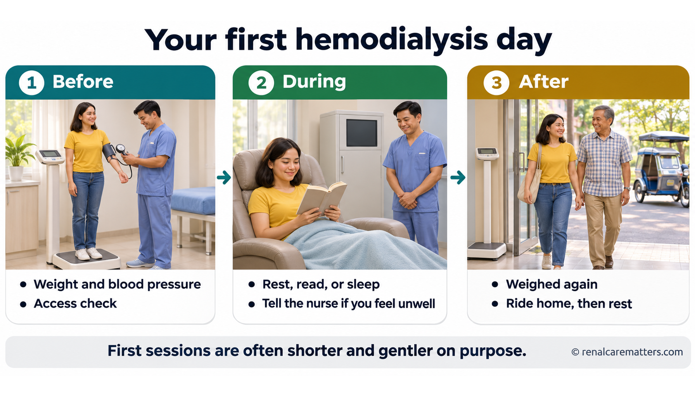
Your first hemodialysis day in three parts: checks before, rest during, and a weigh-out and ride home after.Ang iyong unang araw ng hemodialysis sa tatlong bahagi: mga pagsusuri bago, pahinga habang ginagawa, at pagtimbang at pag-uwi pagkatapos.Ang imong unang adlaw sa hemodialysis sa tulo ka bahin: mga pagsusi sa dili pa, pahulay samtang gihimo, ug pagtimbang ug pagpauli human.Ing mumuna yung aldo ning hemodialysis king atlung parti: pamanyuri bayu, paynawa kabang gagawan, at pamanimbang at pamanuli kaybat.
Your PlanAng Iyong PlanoAng Imong PlanoIng Planu Yu
Your first 90 daysAng iyong unang 90 arawAng imong unang 90 ka adlawIng mumuna yung 90 aldo
The first three months are when your body, your schedule, and your household are all adjusting at once, and it is also the period when complications are most likely. That is the reason for closer follow-up early on. These four checkpoints organize the period. Your care team can move them, and hospital discharge instructions always come first.Sa unang tatlong buwan, sabay-sabay na nag-aadjust ang iyong katawan, iskedyul, at sambahayan, at ito rin ang panahong pinakamalamang ang mga komplikasyon. Iyan ang dahilan ng mas madalas na follow-up sa simula. Inaayos ng apat na checkpoint na ito ang panahong iyon. Maaari itong ilipat ng iyong care team, at laging nauuna ang mga tagubilin sa paglabas ng ospital.Sa unang tulo ka bulan, dungan nga nag-adjust ang imong lawas, iskedyul, ug panimalay, ug mao usab kini ang panahon nga labing lagmit ang mga komplikasyon. Mao kana ang rason sa mas subsob nga follow-up sa sinugdan. Kining upat ka checkpoint mohan-ay nianang panahona. Mahimo kining balhinon sa imong care team, ug kanunay mag-una ang mga instruksyon sa paggawas sa ospital.King mumunang atlung bulan, sabe-sabe lang mag-adjust ing katawan yu, schedule, at pamilya king bale, at ini murin ing panaun a pekamalamang deng komplikasyun. Ita ing sangkan ning mas malimit a follow-up king umpisa. Deting apat a checkpoint aayusan de ing panaun a ita. Malyari nong ilipat ning care team yu, at mumuna la parati deng tagubilin king pamaglual king ospital.
Before leaving hospital or after the first outpatient visitBago lumabas ng ospital o pagkatapos ng unang outpatient na pagbisitaSa dili pa mogawas sa ospital o human sa unang outpatient nga pagbisitaBayu lumual king ospital o kaybat ning mumunang outpatient a pamamisita
Know your planAlamin ang planoHibaloi ang planoBalwan ing planu
Write down why dialysis started, when and where the next treatment is, how you will get there, and who to call after hours. Bring your medicine list and ask what changed. Pick one goal, such as walking to the gate or attending Sunday lunch.Isulat kung bakit sinimulan ang dialysis, kailan at saan ang susunod na gamutan, paano ka makakarating, at sino ang tatawagan lampas sa oras ng opisina. Dalhin ang listahan ng gamot at itanong kung ano ang nagbago. Pumili ng isang layunin, gaya ng paglalakad hanggang gate o pagdalo sa tanghalian tuwing Linggo.Isulat kon ngano gisugdan ang dialysis, kanus-a ug asa ang sunod nga pagtambal, unsaon nimo pag-adto, ug kinsa ang tawagan human sa oras sa opisina. Dad-a ang lista sa tambal ug pangutan-a kon unsa ang nausab. Pagpili og usa ka tumong, sama sa paglakaw padulong sa gate o pagtambong sa paniudto matag Domingo.Isulat yu nung bakit miumpisan ing dialysis, kapilan at nukarin ing tutuking pamanulu, makananu kayung miras karin, at ninu ing awsan nung mayari ne ing oras ning opisina. Dalan ye ing listaan ning panulu at ikutang yu nung nanu ing mibayu. Mamili kayung metung a layunin, antimo ing pamamalakad anggang gate o pamanyatang king pamangan neng Domingu.
First weekUnang linggoUnang semanaMumunang duminggu
Report and recordMag-ulat at magtalaPagreport ug paglistaMag-report at maglista
Report severe symptoms promptly. Note the timing of cramps, dizziness, nausea, or tiredness, and how long you need to recover after HD. Repeat back, in your own words, how to care for your access and what to do if you miss a treatment.Iulat agad ang malulubhang sintomas. Itala kung kailan nangyayari ang pulikat, hilo, pagduduwal, o pagkapagod, at gaano katagal bago ka makabawi pagkatapos ng HD. Ulitin sa sarili mong salita kung paano alagaan ang access at ano ang gagawin kapag may nalaktawang gamutan.I-report dayon ang grabeng mga sintomas. Timan-i kon kanus-a mahitabo ang kalambre, kalipong, kasukaon, o kakapoy, ug unsa kadugay una ka makabawi human sa HD. Balika sa imong kaugalingong pulong kon unsaon pag-atiman sa access ug unsa ang buhaton kon adunay malaktawan nga pagtambal.I-report yu agad deng malalang sintomas. Ilista yu nung kapilan malyari ing pulikat, liu, pamandiri, o pagal, at makananu kabang bayu kayu makabawi kaybat ning HD. Ulitan yu king sarili yung amanu nung makananu yang alagan ing access at nanu ing gawan nung atin milaktawan a pamanulu.
Around day 30Mga ika-30 arawMga ika-30 nga adlawMga ka-30 aldo
Review what changedSuriin ang nagbagoSusiha ang nausabSuriin ing mibayu
Bring your symptom log and ask what has changed since the start. Raise cost, transport, job, or caregiver concerns. If the start was urgent, ask to revisit your access and treatment options, and ask about a transplant referral.Dalhin ang tala ng iyong mga sintomas at itanong kung ano ang nagbago mula nang magsimula. Banggitin ang mga alalahanin sa gastos, transportasyon, trabaho, o tagapag-alaga. Kung biglaan ang pagsisimula, hilinging balikan ang iyong access at mga opsyon sa gamutan, at magtanong tungkol sa referral para sa transplant.Dad-a ang lista sa imong mga sintomas ug pangutan-a kon unsa ang nausab sukad sa pagsugod. Isulti ang mga kabalaka sa gasto, transportasyon, trabaho, o tig-atiman. Kon dinalian ang pagsugod, hangyoa nga balikan ang imong access ug mga opsyon sa pagtambal, ug pangutana bahin sa referral para sa transplant.Dalan ye ing listaan da reng sintomas yu at ikutang yu nung nanu ing mibayu manibat inyang migumpisa. Sabian yu la reng alalanan king gastus, transportasyun, obra, o talapag-alaga. Nung biglaan ing pamagumpisa, pakisabi yung balikan ing access yu at deng option king pamanulu, at mangutang kayu tungkul king referral para king transplant.
Around day 90Mga ika-90 arawMga ika-90 nga adlawMga ka-90 aldo
Check the goalBalikan ang layuninBalika ang tumongBalikan ing layunin
Revisit the activity you wanted to protect. If it is still difficult, ask what should change, who will make the change, and when you will look at it again together.Balikan ang gawaing gusto mong maprotektahan. Kung mahirap pa rin ito, itanong kung ano ang dapat baguhin, sino ang gagawa ng pagbabago, at kailan ninyo ito muling titingnan nang magkasama.Balika ang kalihokan nga gusto nimong mapanalipdan. Kon lisod gihapon kini, pangutan-a kon unsa ang angay usbon, kinsa ang mohimo sa kausaban, ug kanus-a ninyo kini tan-awon pag-usab nga magkauban.Balikan ye ing gawain a buri yung protektan. Nung masakit ya pa murin, ikutang yu nung nanu ing dapat mabayu, ninu ing gawa king pamagbayu, at kapilan yeng lawan pasibayu a abe-abe.
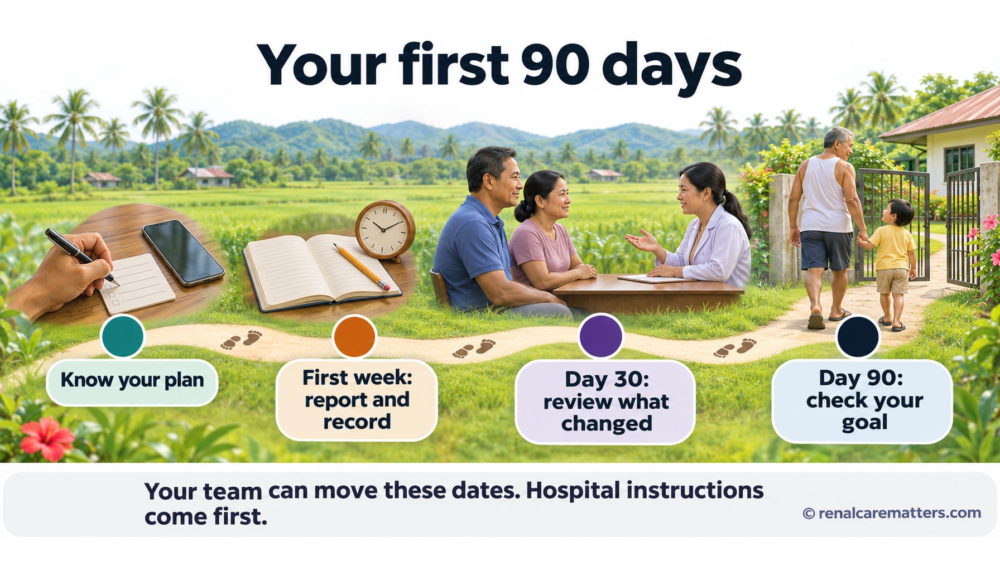
Four checkpoints in the first 90 days: know your plan, report and record, review what changed, and check the goal you chose.Apat na checkpoint sa unang 90 araw: alamin ang plano, mag-ulat at magtala, suriin ang nagbago, at balikan ang piniling layunin.Upat ka checkpoint sa unang 90 ka adlaw: hibaloi ang plano, pagreport ug paglista, susiha ang nausab, ug balika ang napiling tumong.Apat a checkpoint king mumunang 90 aldo: balwan ing planu, mag-report at maglista, suriin ing mibayu, at balikan ing pinili yung layunin.
⚠️
Started in hospital and not sure if it is permanent?Nagsimula sa ospital at hindi tiyak kung panghabambuhay?Nagsugod sa ospital ug dili sigurado kon permanente ba?Migumpisa king ospital at e siguradu nung pang-habambie?
Keep every booked treatment. Then ask three things before you leave or at your next session: Is this acute kidney injury, chronic kidney failure, or still uncertain? Which clinician is watching for kidney recovery, and what is the follow-up date? Which tests (urine amount, blood tests before dialysis) will show recovery? Do not stop or skip dialysis on your own because you feel better or are passing more urine. See AKI Does Not End at Discharge.Daluhan ang bawat nakatakdang gamutan. Pagkatapos, itanong ang tatlong bagay bago ka umalis o sa susunod mong session: Acute kidney injury ba ito, chronic kidney failure, o hindi pa tiyak? Sinong doktor ang nagbabantay sa paggaling ng bato, at kailan ang follow-up? Aling mga test (dami ng ihi, blood test bago mag-dialysis) ang magpapakita ng paggaling? Huwag ihinto o laktawan ang dialysis nang mag-isa dahil lang bumuti ang pakiramdam mo o dumami ang ihi mo. Tingnan ang AKI Does Not End at Discharge.Tambongi ang matag naka-iskedyul nga pagtambal. Dayon, pangutan-a ang tulo ka butang sa dili ka pa mobiya o sa imong sunod nga session: Acute kidney injury ba ni, chronic kidney failure, o dili pa sigurado? Kinsang doktor ang nagbantay sa pagkaayo sa kidney, ug kanus-a ang follow-up? Unsang mga test (gidaghanon sa ihi, blood test sa dili pa ang dialysis) ang mopakita sa pagkaayo? Ayaw undanga o laktawi ang dialysis sa imong kaugalingon tungod lang kay miarang-arang ang imong gibati o midaghan ang imong ihi. Tan-awa ang AKI Does Not End at Discharge.Datangan yu ing balang naka-schedule a pamanulu. Kaybat, ikutang yu ing atlung bage bayu kayu mako o king tutuking session yu: Acute kidney injury ya ini, chronic kidney failure, o e pa siguradu? Ninung doktor ing manalben king pamangayap ning batu, at kapilan ing follow-up? Isanung test (dakal ning imi, blood test bayu ing dialysis) ing magpakit king pamangayap? E yu patuknangan o laktawan ing dialysis king sarili yung desisyun uling sinanting ing panamdam yu o dinakal ing imi yu. Lawan ye ing AKI Does Not End at Discharge.
Plan it on paperPlanuhin sa papelPlanoha sa papelPlanuan king papil
Living With TreatmentPamumuhay Kasabay ng GamutanPagkinabuhi Uban sa PagtambalPamibie-bie Kayabe ning Pamanulu
Daily life: fitting dialysis into your weekAraw-araw na buhay: paano isisingit ang dialysis sa iyong linggoAdlaw-adlaw nga kinabuhi: unsaon pagpahaom sa dialysis sa imong semanaAldo-aldong bie: makananung isingit ing dialysis king duminggu yu
A plan works when it protects something specific. Arranging one reliable ride, or keeping dinner with family on dialysis days, is a better first target than “getting back to normal.” Work through the areas below one at a time, starting with the one that worries you most.Gumagana ang plano kapag may tiyak itong pinoprotektahan. Ang pag-aayos ng isang maaasahang masasakyan, o ang pagpapanatili ng hapunan kasama ang pamilya tuwing araw ng dialysis, ay mas mainam na unang target kaysa “makabalik sa normal.” Isa-isahin ang mga bahagi sa ibaba, simula sa pinakaikinababahala mo.Molampos ang plano kon aduna kini piho nga gipanalipdan. Ang paghikay og usa ka kasaligang masakyan, o ang pagpadayon sa panihapon uban sa pamilya sa mga adlaw sa dialysis, mas maayong unang target kay sa “pagbalik sa normal.” Usa-usaha ang mga bahin sa ubos, sugod sa imong labing gikabalak-an.Gagana ya ing planu nung atin yang tiyak a poprotektan. Ing pamag-ayus king metung a apagkatiwalan a saken, o ing pamamanatili king apunan kayabe ning pamilya neng aldo ning dialysis, mas mayap yang mumunang target kesa king “makabalik king normal.” Metung-metung yu la reng parti king lalam, umpisan yu king pekapag-alalanan yu.
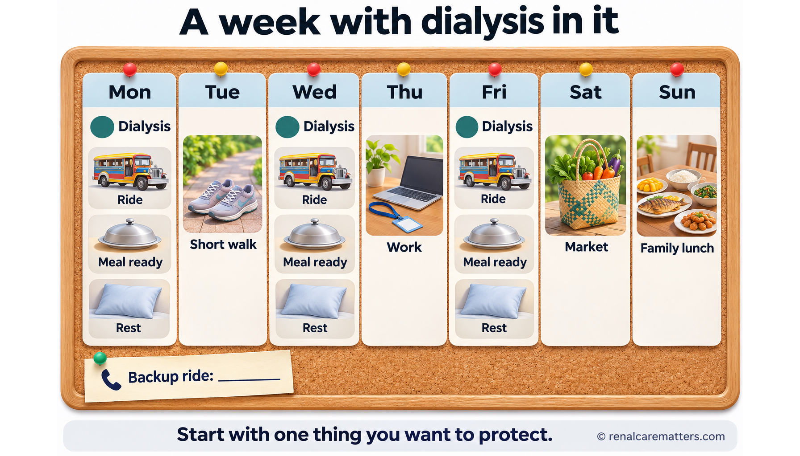
One week with dialysis in it: three treatment days with a ride and a ready meal, and the rest of the week kept for work, walks, and family.Isang linggong may dialysis: tatlong araw ng gamutan na may masasakyan at handang pagkain, at ang natitirang araw ay para sa trabaho, paglalakad, at pamilya.Usa ka semana nga adunay dialysis: tulo ka adlaw sa pagtambal nga adunay masakyan ug andam nga pagkaon, ug ang nahabiling adlaw para sa trabaho, paglakaw, ug pamilya.Metung a duminggung atin dialysis: atlung aldo ning pamanulu a atin saken at makasadiang pamangan, at deng aliwang aldo para king obra, pamamalakad, at pamilya.
Work, school, and your shiftTrabaho, pag-aaral, at ang iyong shiftTrabaho, pag-eskwela, ug ang imong shiftObra, pamag-aral, at ing shift yu
Ask which shifts are open and whether an early-morning or evening slot would protect your job or classes. A doctor’s letter can help you ask an employer for adjusted hours. Many people cannot keep full-time work at first, so plan the household budget with that in mind, and ask about the PWD (person with disability) ID.Itanong kung aling mga shift ang bukas at kung ang maagang umaga o gabing slot ay makapoprotekta sa iyong trabaho o klase. Makatutulong ang sulat ng doktor sa paghingi sa employer ng binagong oras. Marami ang hindi kayang manatili sa full-time na trabaho sa simula, kaya isaalang-alang iyon sa badyet ng sambahayan, at magtanong tungkol sa PWD (person with disability) ID.Pangutan-a kon unsang mga shift ang bakante ug kon ang sayo sa buntag o gabii nga slot makapanalipod ba sa imong trabaho o klase. Ang sulat sa doktor makatabang sa paghangyo sa employer og gi-adjust nga oras. Daghan ang dili makapadayon sa full-time nga trabaho sa sinugdan, mao nga hunahunaa kana sa badyet sa panimalay, ug pangutana bahin sa PWD (person with disability) ID.Ikutang yu nung isanung shift ing bukas at nung ing maranun a abak o bengi a slot protektan ne ing obra o klase yu. Ing sulat ning doktor makasaup yang manyawad king employer king mibayung oras. Dakal la reng e makapanatili king full-time a obra king umpisa, kaya isipan yu ita king budget ning bale, at mangutang kayu tungkul king PWD (person with disability) ID.
Transport and a backup rideTransportasyon at reserbang masasakyanTransportasyon ug reserbang masakyanTransportasyun at reserbang saken
Getting there three times a week is often the hardest part. Name your usual ride and one backup person, and keep the unit’s number where the family can find it. If a typhoon, flood, or brownout blocks your trip, call the unit early for a plan.Ang pagpunta nang tatlong beses sa isang linggo ang madalas na pinakamahirap. Tukuyin ang karaniwan mong masasakyan at isang reserbang tao, at ilagay ang numero ng unit kung saan makikita ng pamilya. Kapag hinarangan ng bagyo, baha, o brownout ang iyong biyahe, tumawag nang maaga sa unit para sa plano.Ang pag-adto og katulo sa usa ka semana kasagaran mao ang labing lisod. Ilha ang imong naandang masakyan ug usa ka reserbang tawo, ug ibutang ang numero sa unit diin makita sa pamilya. Kon ang bagyo, baha, o brownout mobabag sa imong biyahe, tawag og sayo sa unit para sa plano.Ing pamamunta atlung beses king metung a duminggu ya ing malimit pekamasakit. Tukuyan ye ing karaniwan yung saken at metung a reserbang tau, at bili ye ing numeru ning unit nung nu de akit ning pamilya. Nung ing bagyu, albug, o brownout sabatan ne ing biyahe yu, maus kayung maranun king unit para king planu.
Treatment-day meals and recoveryPagkain at pagbawi sa araw ng gamutanPagkaon ug pagbawi sa adlaw sa pagtambalPamangan at pamamawi neng aldo ning pamanulu
Plan a simple meal for after treatment, when cooking feels hardest. If you need the whole evening to recover, tell the team how many hours it takes. Recovery time is something they can work on by adjusting how fluid is removed, your target weight, and dialysis settings.Magplano ng simpleng pagkain para pagkatapos ng gamutan, kung kailan pinakamahirap magluto. Kung kailangan mo ang buong gabi para makabawi, sabihin sa team kung ilang oras ito. Ang tagal ng pagbawi ay bagay na kaya nilang ayusin sa pagbabago ng paraan ng pag-alis ng tubig, target na timbang, at mga setting ng dialysis.Pagplano og yano nga pagkaon para human sa pagtambal, kon kanus-a labing lisod ang pagluto. Kon kinahanglan nimo ang tibuok gabii aron makabawi, sultihi ang team kon pila ka oras kini. Ang gidugayon sa pagbawi butang nga ilang maayo pinaagi sa pag-usab sa paagi sa pagkuha sa tubig, target nga timbang, ug mga setting sa dialysis.Magplanu kayung simpling pamangan para kaybat ning pamanulu, nung kapilan pekamasakit ing maglutu. Nung kailangan yu ing mabilug a bengi bang makabawi, sabian yu king team nung pilan yang oras. Ing kaba ning pamamawi metung yang bage a agyu dang ayusan king pamagbayu king paralan ning pamaglako danum, target a timbang, at deng setting ning dialysis.
Food and fluid, made personalPagkain at tubig, ayon sa iyoPagkaon ug tubig, sumala kanimoPamangan at danum, agpang kekayu
Ask to see a renal dietitian. Your limits for salt, fluid, potassium, and phosphorus depend on your blood tests and how much urine you still make. Protein is different: most people on dialysis need more protein than before, not less, because each treatment removes some.Hilinging makita ang isang renal dietitian. Ang iyong mga limitasyon sa asin, tubig, potassium, at phosphorus ay nakadepende sa iyong mga blood test at kung gaano karami pa ang iyong ihi. Iba ang protina: karamihan ng nasa dialysis ay nangangailangan ng mas maraming protina kaysa dati, hindi mas kaunti, dahil may naaalis sa bawat gamutan.Hangyoa nga makakita og renal dietitian. Ang imong mga limitasyon sa asin, tubig, potassium, ug phosphorus nagdepende sa imong mga blood test ug kon unsa pa kadaghan ang imong ihi. Lahi ang protina: kadaghanan sa naa sa dialysis nagkinahanglan og mas daghang protina kay sa kaniadto, dili mas gamay, kay adunay makuha sa matag pagtambal.Pakisabi yung akit ye ing metung a renal dietitian. Deng limit yu king asin, danum, potassium, at phosphorus makadepende la kareng blood test yu at nung makananu pa kadakal ing imi yu. Aliwa ya ing protina: keraklan da reng atiu king dialysis kailangan da ing mas dakal a protina kesa king sadya, e mas ditak, uling atin malalako balang pamanulu.
MovementPagkilosKalihokanPamangimut
Start small and regular: a short walk on non-dialysis days, or sit-to-stand practice from a chair. In a large German trial, supervised exercise during hemodialysis improved how many times people could stand up from a chair in a minute. Ask your team what is safe for your heart and your access.Magsimula sa maliit at regular: maikling lakad sa mga araw na walang dialysis, o pagsasanay sa pag-upo at pagtayo mula sa silya. Sa isang malaking pag-aaral sa Germany, ang ehersisyong may gabay habang nagha-hemodialysis ay nagpabuti sa dami ng beses na kayang tumayo ng mga tao mula sa silya sa loob ng isang minuto. Itanong sa iyong team kung ano ang ligtas para sa iyong puso at access.Sugod sa gamay ug regular: mubo nga lakaw sa mga adlaw nga walay dialysis, o praktis sa paglingkod ug pagbarog gikan sa lingkoranan. Sa usa ka dakong pagtuon sa Germany, ang ehersisyo nga adunay giya samtang nag-hemodialysis mipaayo sa gidaghanon sa higayon nga makabarog ang mga tawo gikan sa lingkoranan sulod sa usa ka minuto. Pangutan-a ang imong team kon unsa ang luwas para sa imong kasingkasing ug access.Magumpisa kayu king malati at regular: makuyad a lakad kareng aldong alang dialysis, o praktis king pamanuknangan at pamanalakad ibat king silya. King metung a maragul a pamag-aral king Germany, ing ehersisyung atin gabe kabang mag-hemodialysis pepasanting ne ing dakal ning beses a agyu dang talakad deng tau ibat king silya kilub ning metung a minutu. Ikutang yu king team yu nung nanu ing ligtas para king pusu at access yu.
Mood, family, and people who have been thereKalooban, pamilya, at mga taong dumaan na ritoPagbati, pamilya, ug mga tawo nga nakaagi na niiniLub, pamilya, at deng taung dinalan na keni
Sadness and worry are common in the first months and respond to treatment. Tell your team if low mood lasts more than two weeks. Caregivers tire too: in a Dutch study, caregivers’ own health and mood declined over the first year, so share tasks early. Ask the unit to introduce you to a patient who started a year or two ago.Karaniwan ang lungkot at pag-aalala sa mga unang buwan at tumutugon ito sa gamutan. Sabihin sa iyong team kung tumatagal nang higit dalawang linggo ang mababang kalooban. Napapagod din ang mga tagapag-alaga: sa isang pag-aaral sa Netherlands, bumaba ang sariling kalusugan at kalooban ng mga tagapag-alaga sa unang taon, kaya maagang hatiin ang mga gawain. Hilingin sa unit na ipakilala ka sa pasyenteng nagsimula isa o dalawang taon na ang nakararaan.Kasagaran ang kasubo ug kabalaka sa unang mga bulan ug motubag kini sa pagtambal. Sultihi ang imong team kon ang kasubo molungtad og sobra sa duha ka semana. Kapoyon usab ang mga tig-atiman: sa usa ka pagtuon sa Netherlands, mius-os ang kaugalingong panglawas ug pagbati sa mga tig-atiman sa unang tuig, mao nga bahina og sayo ang mga buluhaton. Hangyoa ang unit nga ipaila-ila ka sa pasyente nga nagsugod usa o duha ka tuig na ang milabay.Karaniwan ing lungkut at pamag-alala kareng mumunang bulan at tutugun la king pamanulu. Sabian yu king team yu nung ing lungkut tatagal yang igit adwang duminggu. Mapagal la murin deng talapag-alaga: king metung a pamag-aral king Netherlands, mibaba ing sarili dang kalusugan at lub deng talapag-alaga king mumunang banua, kaya maranun yung pitnan deng gawain. Pakisabi yu king unit na ipakilala da kayu king pasyenting migumpisa metung o adwang banua ne ing milabas.
Your ChoicesAng Iyong mga PagpipilianAng Imong mga KapilianDeng Pamilian Yu
Your options remain openBukas pa rin ang iyong mga opsyonBukas gihapon ang imong mga opsyonBukas la pa murin deng option yu
Starting one kind of dialysis does not lock you into it. This matters most after an urgent start, when the first treatment was whatever could be arranged safely that week. Once you are stable, ask for the conversation you did not have time for.Ang pagsisimula sa isang uri ng dialysis ay hindi nangangahulugang doon ka na habambuhay. Pinakamahalaga ito pagkatapos ng biglaang pagsisimula, kung saan ang unang gamutan ay kung ano ang ligtas na naisaayos sa linggong iyon. Kapag matatag ka na, hilingin ang usapang hindi ninyo nagkaroon ng panahong gawin.Ang pagsugod sa usa ka matang sa dialysis wala magpasabot nga didto na ka hangtod sa hangtod. Labing importante kini human sa dinaliang pagsugod, diin ang unang pagtambal mao ang bisan unsa nga luwas nga nahikay nianang semanaha. Kon lig-on na ka, pangayoa ang panag-istorya nga wala ninyo maatiman.Ing pamagumpisa king metung a klasing dialysis e na buring sabian na karin na ka kapilan man. Pekaimportanti ini kaybat ning biglaan a pamagumpisa, nung nu ing mumunang pamanulu ya ing nanu mang ligtas a meyayus king duminggung ita. Potang matatag na kayu, pakisabi yu ing pamisabi a e yu ikua agawa.
OptionOpsyonOpsyonOption
What it involvesAno ang kasama ritoUnsa ang naglangkob niiniNanu ing kayabe na
Can it be revisited?Maaari bang balikan?Mahimo bang balikan?Malyari yang balikan?
In-center hemodialysisHemodialysis sa centerHemodialysis sa centerHemodialysis king center
Staff deliver treatment on a set schedule, usually three times a week. Ask about shifts, travel, and recovery time.Mga staff ang nagbibigay ng gamutan sa takdang iskedyul, karaniwang tatlong beses kada linggo. Magtanong tungkol sa shift, biyahe, at tagal ng pagbawi.Mga staff ang mohatag sa pagtambal sa gitakdang iskedyul, kasagaran katulo matag semana. Pangutana bahin sa shift, biyahe, ug gidugayon sa pagbawi.Deng staff ing mamye king pamanulu king takdang schedule, karaniwan atlung beses kada duminggu. Mangutang kayu tungkul king shift, biyahe, at kaba ning pamamawi.
Yes. You can move to home dialysis or a transplant later.Oo. Maaari kang lumipat sa dialysis sa bahay o transplant sa hinaharap.Oo. Makabalhin ka sa dialysis sa balay o transplant sa umaabot.Wa. Malyari kayung lumipat king dialysis king bale o transplant king tutuking panaun.
Peritoneal dialysis at homePeritoneal dialysis sa bahayPeritoneal dialysis sa balayPeritoneal dialysis king bale
You or a helper do exchanges daily after training. Needs clean technique, storage space, reliable supplies, and a backup plan.Ikaw o isang katulong ang gumagawa ng exchange araw-araw pagkatapos ng training. Kailangan ng malinis na pamamaraan, lugar na imbakan, maaasahang supply, at reserbang plano.Ikaw o usa ka katabang ang mohimo sa exchange adlaw-adlaw human sa training. Nagkinahanglan og limpyo nga pamaagi, lugar nga kabutangan, kasaligang supply, ug reserbang plano.Ika o metung a katuwang ing gagawa king exchange aldo-aldo kaybat ning training. Kailangan ing malinis a paralan, lugal a pipagtaguan, apagkatiwalan a supply, at reserbang planu.
Yes. People move between PD and HD in both directions.Oo. May lumilipat mula PD papuntang HD at pabalik.Oo. Adunay mobalhin gikan sa PD ngadto sa HD ug balik.Wa. Atin lilipat ibat king PD papunta king HD at pabalik.
Home hemodialysisHemodialysis sa bahayHemodialysis sa balayHemodialysis king bale
Available in a few local programs. Needs training, suitable water and electricity, and usually a care partner.Mayroon sa iilang lokal na programa. Kailangan ng training, angkop na tubig at kuryente, at kadalasan ay isang katuwang sa pag-aalaga.Anaa sa pipila ka lokal nga programa. Nagkinahanglan og training, angay nga tubig ug kuryente, ug kasagaran usa ka kauban sa pag-atiman.Atin king mapilan a lokal a programa. Kailangan ing training, ustung danum at kuryenti, at karaniwan metung a katuwang king pamangalaga.
Yes, where a program exists.Oo, kung may programa.Oo, kon adunay programa.Wa, nung atin programa.
The treatment with the best long-term results for those who are eligible. Ask about evaluation even after dialysis has started.Ang gamutang may pinakamagandang pangmatagalang resulta para sa mga kuwalipikado. Magtanong tungkol sa ebalwasyon kahit nagsimula na ang dialysis.Ang pagtambal nga adunay labing maayong dugay nga resulta para sa mga kwalipikado. Pangutana bahin sa ebalwasyon bisan nagsugod na ang dialysis.Ing pamanulung atin pekamasanting a pang-makaba a resulta para kareng kwalipikadu. Mangutang kayu tungkul king evaluation agyang migumpisa ne ing dialysis.
Yes. Referral is appropriate once you are medically stable.Oo. Angkop ang referral kapag matatag na ang iyong kalagayan.Oo. Angay ang referral kon lig-on na ang imong kahimtang.Wa. Ustu ing referral potang matatag ne ing lagay yu.
Planned care without dialysis: active relief of symptoms, treatment of complications, and support for you and your family.Planadong pangangalaga na walang dialysis: aktibong paglunas sa mga sintomas, paggamot sa mga komplikasyon, at suporta para sa iyo at sa iyong pamilya.Planadong pag-atiman nga walay dialysis: aktibong paghupay sa mga sintomas, pagtambal sa mga komplikasyon, ug suporta para kanimo ug sa imong pamilya.Planadung pamangalaga a alang dialysis: aktibung pamanlunas kareng sintomas, pamanulu kareng komplikasyun, at suporta para kekayu at king pamilya yu.
Yes. You can ask to review the plan at any time, in either direction.Oo. Maaari mong hilinging balikan ang plano anumang oras, sa alinmang direksyon.Oo. Makahangyo ka nga balikan ang plano bisan kanus-a, sa bisan asang direksyon.Wa. Malyari yung pakisabing balikan ing planu nanu mang oras, king nanu mang direksyun.
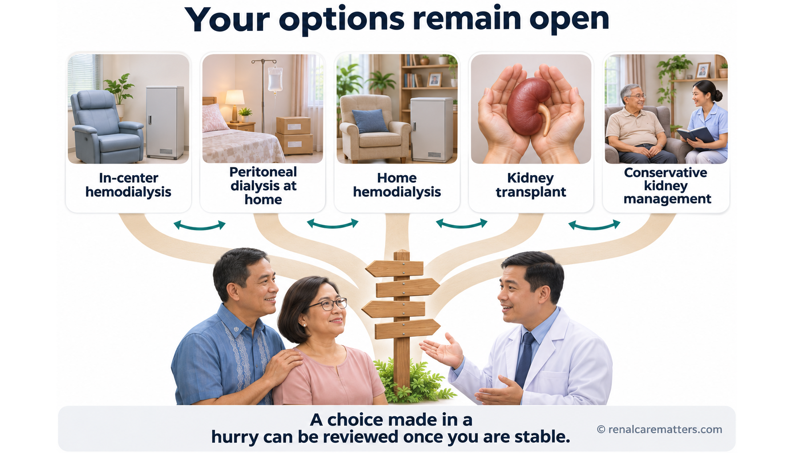
The five paths of kidney failure care are connected. A choice made during an urgent start can be reviewed once you are stable.Magkakaugnay ang limang landas ng pangangalaga sa kidney failure. Ang pagpiling ginawa sa biglaang pagsisimula ay maaaring balikan kapag matatag ka na.Nagkadugtong ang lima ka dalan sa pag-atiman sa kidney failure. Ang pagpili nga gihimo sa dinaliang pagsugod mahimong balikan kon lig-on na ka.Mikakabit la reng limang dalan ning pamangalaga king kidney failure. Ing pamamiling gewa king biglaan a pamagumpisa malyari yang balikan potang matatag na kayu.
HD
Hemodialysis
PD
Peritoneal dialysis
CKM
Conservative kidney management
For frail older adults, the most useful starting point is what matters day to day: the activities you want to keep, time at home rather than in a facility, relief of symptoms, and what your caregivers can sustain. In people over 80, or over 65 with frailty or several other illnesses, a large British trial published in November 2026 found no clear advantage, in length and quality of life combined, for preparing for dialysis over preparing for well-organized conservative care. Neither path is the “giving up” path. See Dialysis in the Elderly and Advance Care Planning.Para sa mahihinang nakatatanda, ang pinakakapaki-pakinabang na simula ay kung ano ang mahalaga sa araw-araw: ang mga gawaing gusto mong mapanatili, panahon sa bahay sa halip na sa pasilidad, ginhawa sa mga sintomas, at kung ano ang kayang panindigan ng iyong mga tagapag-alaga. Sa mga lampas 80 anyos, o lampas 65 na mahina o may ilan pang sakit, isang malaking pag-aaral sa Britanya na inilathala noong Nobyembre 2026 ang walang nakitang malinaw na bentahe, sa pinagsamang haba at kalidad ng buhay, ng paghahanda para sa dialysis kumpara sa paghahanda para sa maayos na conservative care. Wala sa dalawang landas ang landas ng “pagsuko.” Tingnan ang Dialysis in the Elderly at Advance Care Planning.Para sa mga huyang nga tigulang, ang labing mapuslanong sinugdanan mao ang importante sa adlaw-adlaw: ang mga kalihokan nga gusto nimong mapadayon, panahon sa balay imbes sa pasilidad, kahupayan sa mga sintomas, ug kon unsa ang makaya sa imong mga tig-atiman. Sa mga lapas 80 anyos, o lapas 65 nga huyang o adunay daghang laing sakit, usa ka dakong pagtuon sa Britanya nga gipatik niadtong Nobyembre 2026 ang walay nakitang klaro nga bentaha, sa gihiusang gitas-on ug kalidad sa kinabuhi, sa pagpangandam para sa dialysis kon itandi sa pagpangandam para sa hapsay nga conservative care. Walay usa sa duha ka dalan ang dalan sa “pagsurender.” Tan-awa ang Dialysis in the Elderly ug Advance Care Planning.Para kareng maynang makatua, ing pekamakasaup a umpisa ya ing nanu ing importanti king aldo-aldo: deng gawain a buri yung manatili, panaun king bale kesa king pasilidad, ginawa kareng sintomas, at nung nanu ing agyu dang panindigan deng talapag-alaga yu. Kareng lampas 80 anyos, o lampas 65 a mayna o atin mapilan pang sakit, metung a maragul a pamag-aral king Britanya a linual inyang Nobyembre 2026 ing alang ikit a malino a bentahe, king misanmetung a kaba at kalidad ning bie, ning pamanyadia para king dialysis kumpara king pamanyadia para king mayap a conservative care. Ala king adwang dalan ing dalan ning “pamanyuku.” Lawan ye ing Dialysis in the Elderly at Advance Care Planning.
An Honest AnswerIsang Tapat na SagotUsa ka Matinud-anong TubagMetung a Tapat a Pakibat
“How long can I live on dialysis?”“Gaano katagal ako mabubuhay sa dialysis?”“Unsa kadugay ko mabuhi sa dialysis?”“Makananu kakaba ing bie ku king dialysis?”
Dialysis can keep you alive when your kidneys can no longer do enough on their own. It can also bring a demanding routine, and some people remain very unwell. If you want to talk about what to expect, ask your team what the next few months might look like in your situation and what changes would prompt a review of your plan.Kayang panatilihin kang buhay ng dialysis kapag hindi na sapat ang kayang gawin ng iyong mga bato. Maaari rin itong magdala ng mabigat na rutina, at may mga taong nananatiling malubha ang kalagayan. Kung gusto mong pag-usapan kung ano ang aasahan, itanong sa iyong team kung ano ang maaaring hitsura ng susunod na ilang buwan sa iyong sitwasyon at kung anong mga pagbabago ang magiging dahilan para balikan ang iyong plano.Ang dialysis makapabilin kanimong buhi kon ang imong mga kidney dili na makahimo og igo. Makadala usab kini og bug-at nga rutina, ug adunay mga tawo nga magpabiling grabe ang kahimtang. Kon gusto nimong hisgotan kon unsa ang paabuton, pangutan-a ang imong team kon unsa ang mahimong dagway sa mosunod nga pipila ka bulan sa imong sitwasyon ug unsang mga kausaban ang mahimong hinungdan aron balikan ang imong plano.Agyu na kang panatilian a mabie ning dialysis nung e na sapat ing agyu dang gawan deng batu mu. Malyari ya muring magdalang mabayat a rutina, at atin taung mananatiling malala ing lagay da. Nung buri mung pisabian nung nanu ing panenayan, ikutang mu king team mu nung nanu ing malyaring itsura da reng tutuking mapilan a bulan king sitwasyun mu at nung nanung pamagbayu ing maging sangkan bang balikan ing planu mu.
Many people live for years on dialysis, and some for decades. How long depends far more on the person than on the treatment: age, the health of the heart and blood vessels, diabetes, strength and frailty, whether the start was planned or an emergency, and whether a transplant is possible. That is why two people starting in the same week can have very different paths, and why an average from a registry cannot tell you your own.Marami ang nabubuhay nang maraming taon sa dialysis, at ang ilan ay ilang dekada. Kung gaano katagal ay higit na nakadepende sa tao kaysa sa gamutan: edad, kalusugan ng puso at mga ugat, diabetes, lakas at kahinaan ng katawan, kung planado o emergency ang pagsisimula, at kung posible ang transplant. Kaya ang dalawang taong nagsimula sa parehong linggo ay maaaring magkaroon ng magkaibang-magkaibang landas, at kaya hindi masasabi ng karaniwang bilang mula sa isang registry ang sa iyo.Daghan ang mabuhi og daghang tuig sa dialysis, ug ang uban mga dekada. Kon unsa kadugay mas nagdepende sa tawo kay sa pagtambal: edad, panglawas sa kasingkasing ug mga ugat, diabetes, kusog ug kahuyang sa lawas, kon planado ba o emergency ang pagsugod, ug kon posible ba ang transplant. Mao nga ang duha ka tawo nga nagsugod sa samang semana mahimong adunay lahi kaayong dalan, ug mao nga ang average gikan sa usa ka registry dili makasulti sa imoha.Dakal la reng mabibie dakal a banua king dialysis, at deng aliwa mapilan a dekada. Nung makananu kakaba mas makadepende ya king tau kesa king pamanulu: edad, kalusugan ning pusu at deng uyat, diabetes, sikan at kaynan ning katawan, nung planadu o emergency ing pamagumpisa, at nung posibli ing transplant. Kaya deng adwang taung migumpisa king pareung duminggu malyari lang atin aliwa-aliwang dalan, at kaya ing average ibat king metung a registry e na asabi ing keka.
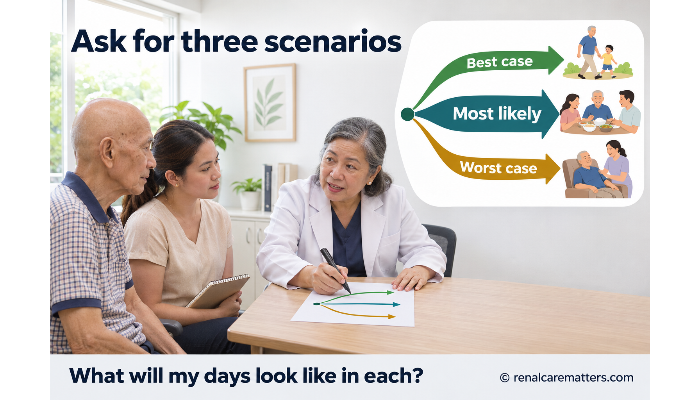
A better question than “how many years?”: ask your team for the best case, the worst case, and the most likely course for the life you want to live.Mas mainam na tanong kaysa “ilang taon?”: hilingin sa iyong team ang pinakamaganda, ang pinakamasama, at ang pinakamalamang na mangyari sa buhay na gusto mong ipamuhay.Mas maayong pangutana kay sa “pila ka tuig?”: pangayoa sa imong team ang labing maayo, ang labing dautan, ug ang labing lagmit nga mahitabo sa kinabuhi nga gusto nimong puy-an.Mas mayap a kutang kesa king “pilan a banua?”: pakisabi yu king team yu ing pekamasanting, ing pekamarok, at ing pekamalamang a malyari king bie a buri yung ibie.
See survival data from a large European registryTingnan ang datos ng survival mula sa isang malaking registry sa EuropaTan-awa ang datos sa survival gikan sa usa ka dakong registry sa EuropaLawan ye ing data ning survival ibat king metung a maragul a registry king Europa
These figures come from the European Renal Association (ERA) Registry, which pools national and regional registries in Europe and nearby countries. They describe everyone who started dialysis in the years shown, of all ages and all states of health, counted from the first day of treatment. They are not from the Philippines, and they are not a forecast for any one person.Ang mga bilang na ito ay mula sa European Renal Association (ERA) Registry, na nagsasama-sama ng mga pambansa at panrehiyong registry sa Europa at mga karatig-bansa. Inilalarawan nito ang lahat ng nagsimula ng dialysis sa mga taong ipinakita, anuman ang edad at kalagayan ng kalusugan, binilang mula sa unang araw ng gamutan. Hindi ito mula sa Pilipinas, at hindi ito hula para sa sinumang isang tao.Kini nga mga numero gikan sa European Renal Association (ERA) Registry, nga naghiusa sa mga nasyonal ug rehiyonal nga registry sa Europa ug kasikbit nga mga nasod. Naghulagway kini sa tanang nagsugod og dialysis sa mga tuig nga gipakita, bisan unsang edad ug kahimtang sa panglawas, giihap gikan sa unang adlaw sa pagtambal. Dili kini gikan sa Pilipinas, ug dili kini tagna para sa bisan kinsang usa ka tawo.Deng numerung deti ibat la king European Renal Association (ERA) Registry, a pisasanmetung na la reng national at regional a registry king Europa at kareng kasiping a bansa. Ilalarawan da ing sablang migumpisang dialysis kareng banuang makapakit, nanu man ing edad at lagay ning kalusugan, bibilangan manibat king mumunang aldo ning pamanulu. E la ibat king Pilipinas, at e la ula para king ninu mang metung a tau.
Time since starting dialysisTagal mula nang magsimula ng dialysisGidugayon sukad nagsugod sa dialysisKaba manibat inyang migumpisa king dialysis
People still alive (estimate)Mga taong buhay pa (tantiya)Mga tawo nga buhi pa (banabana)Deng taung mabie pa (tantia)
Who was countedSino ang binilangKinsa ang giihapNinu ing binilang
90 days90 araw90 ka adlaw90 aldo
94.9%94.9%94.9%94.9%
94.8 to 95.094.8 hanggang 95.094.8 hangtod 95.094.8 anggang 95.0
Started 2017–2021Nagsimula 2017–2021Nagsugod 2017–2021Migumpisa 2017–2021
1 year1 taon1 ka tuig1 banua
84.7%84.7%84.7%84.7%
84.6 to 84.984.6 hanggang 84.984.6 hangtod 84.984.6 anggang 84.9
Started 2017–2021Nagsimula 2017–2021Nagsugod 2017–2021Migumpisa 2017–2021
2 years2 taon2 ka tuig2 banua
73.3%73.3%73.3%73.3%
73.1 to 73.573.1 hanggang 73.573.1 hangtod 73.573.1 anggang 73.5
Started 2017–2021Nagsimula 2017–2021Nagsugod 2017–2021Migumpisa 2017–2021
5 years5 taon5 ka tuig5 banua
41.4%41.4%41.4%41.4%
41.1 to 41.641.1 hanggang 41.641.1 hangtod 41.641.1 anggang 41.6
Started 2014–2018 (a different, partly overlapping group)Nagsimula 2014–2018 (ibang grupo na bahagyang nagkakapatong)Nagsugod 2014–2018 (laing grupo nga bahin nagsapaw)Migumpisa 2014–2018 (aliwang grupu a bahagyang mipapatung)
How to read this: people who received a transplant, whose kidneys recovered, or whose follow-up ended were removed from the count at that point, so the table describes time on dialysis. Age changes the picture greatly. In the same registry, five-year survival among people still on dialysis after the first three months ranged from 87% in those under 20 to 25% in those aged 75 or older. The better question for your team is this one: “Given my other health problems, what are the best case, the worst case, and the most likely course for my ability to live the way I want?”Paano ito babasahin: ang mga taong nakatanggap ng transplant, gumaling ang bato, o natapos ang pagsubaybay ay inalis sa bilang sa puntong iyon, kaya inilalarawan ng talahanayan ang panahong nasa dialysis. Malaki ang pagbabagong dulot ng edad. Sa parehong registry, ang limang-taong survival ng mga taong nasa dialysis pa rin pagkalipas ng unang tatlong buwan ay mula 87% sa mga wala pang 20 anyos hanggang 25% sa mga 75 anyos pataas. Ang mas mainam na tanong para sa iyong team ay ito: “Dahil sa iba ko pang problema sa kalusugan, ano ang pinakamaganda, ang pinakamasama, at ang pinakamalamang na mangyari sa kakayahan kong mamuhay ayon sa gusto ko?”Unsaon kini pagbasa: ang mga tawo nga nakadawat og transplant, naayo ang kidney, o natapos ang pagsubay gikuha sa ihap niadtong puntoha, mao nga ang talaan naghulagway sa panahon nga naa sa dialysis. Dako ang kausaban nga dala sa edad. Sa samang registry, ang lima-ka-tuig nga survival sa mga tawo nga naa pa sa dialysis human sa unang tulo ka bulan gikan sa 87% sa mga ubos sa 20 anyos hangtod 25% sa mga 75 anyos pataas. Ang mas maayong pangutana para sa imong team mao kini: “Tungod sa uban nakong problema sa panglawas, unsa ang labing maayo, ang labing dautan, ug ang labing lagmit nga mahitabo sa akong katakos nga magkinabuhi sumala sa akong gusto?”Makananu yang basan ini: deng taung tinanggap transplant, kinayap ing batu, o meyari ing pamanubaybay milako la king bilang king puntung ita, kaya ing table ilalarawan ne ing panaun a atiu king dialysis. Maragul ing pamagbayung dala ning edad. King pareung registry, ing limang-banuang survival da reng taung atiu pa king dialysis kaybat ning mumunang atlung bulan manibat 87% kareng ala pang 20 anyos anggang 25% kareng 75 anyos pataas. Ing mas mayap a kutang para king team mu ya ini: “Uli da reng aliwa kung problema king kalusugan, nanu ing pekamasanting, ing pekamarok, at ing pekamalamang a malyari king agyu kung mabie agpang king buri ku?”
If you are unsure whether to continue, say so. Your team can offer a conversation about your goals, a trial of dialysis for an agreed period with a planned review, clear signs that would prompt a change of plan, and supportive care for symptoms whatever you decide.Kung hindi ka tiyak kung magpapatuloy, sabihin mo. Maaaring mag-alok ang iyong team ng usapan tungkol sa iyong mga layunin, pagsubok sa dialysis sa napagkasunduang panahon na may planadong pagsusuri, malinaw na mga senyales na magiging dahilan ng pagbabago ng plano, at supportive care para sa mga sintomas anuman ang iyong pasya.Kon dili ka sigurado kon mopadayon ba, isulti. Ang imong team makatanyag og panag-istorya bahin sa imong mga tumong, pagsulay sa dialysis sulod sa gikasabotang panahon nga adunay planadong pagsusi, klarong mga timailhan nga mahimong hinungdan sa pag-usab sa plano, ug supportive care para sa mga sintomas bisan unsa ang imong desisyon.Nung e ka siguradu nung isundu mu, sabian mu. Ing team mu malyari yang mag-aluk pamisabi tungkul kareng layunin mu, pamanyubuk king dialysis king mipagkasunduan a panaun a atin planadung pamanyuri, malinong senyales a maging sangkan ning pamagbayu king planu, at supportive care para kareng sintomas nanu man ing desisyun mu.
SafetyKaligtasanKaluwasanKaligtasan
When to get helpKailan hihingi ng tulongKanus-a mangayo og tabangKapilan manyawad saup
⛔
Go to the emergency room nowPumunta sa emergency room ngayon dinAdto sa emergency room karon dayonMunta king emergency room ngeni mismu
Severe trouble breathing. Chest pain. Fainting. New severe confusion. Heavy or spurting bleeding from a fistula, graft, or catheter, or bleeding that will not stop.Matinding hirap sa paghinga. Pananakit ng dibdib. Pagkahimatay. Bagong matinding pagkalito. Malakas o pumupulandit na pagdurugo mula sa fistula, graft, o catheter, o pagdurugong ayaw tumigil.Grabeng kalisod sa pagginhawa. Sakit sa dughan. Pagkakuyap. Bag-ong grabeng kalibog. Kusog o nagbuswak nga pagdugo gikan sa fistula, graft, o catheter, o pagdugo nga dili moundang.Masyadung masakit a pamangisnawa. Sakit king salu. Pangamate-lub (himatay). Bayung malalang pangalitu. Masikan o sisirit a pamandaya ibat king fistula, graft, o catheter, o pamandayang e tutuknang.
For heavy access bleeding: press firmly and steadily on the spot with clean gauze or a clean cloth, do not lift it to look, and keep pressing while someone arranges emergency help.Para sa malakas na pagdurugo ng access: diinan nang mariin at tuloy-tuloy ang bahagi gamit ang malinis na gasa o malinis na tela, huwag itong iangat para silipin, at ituloy ang pagdiin habang may nag-aayos ng emergency na tulong.Para sa kusog nga pagdugo sa access: pug-i og hugot ug padayon ang bahin gamit ang limpyo nga gasa o limpyo nga panapton, ayaw kini iisa aron tan-awon, ug padayona ang pagpugong samtang adunay naghikay og emergency nga tabang.Para king masikan a pamandaya ning access: diinan yung masalese at tuluy-tuluy ing lugal gamit ing malinis a gasa o malinis a tela, e ye ibuklat bang lawan, at isundu ye ing pamandiin kabang atin mag-ayus emergency a saup.
⚠️
Call your dialysis team todayTumawag sa iyong dialysis team ngayong arawTawagi ang imong dialysis team karong adlawaAwsan ye ing dialysis team yu ngening aldo
Fever or chills. Redness, swelling, pain, or drainage at your access or catheter site. The usual buzz of your fistula or graft is missing. On peritoneal dialysis: cloudy drainage fluid or new belly pain. You cannot attend a session, or a home treatment was interrupted.Lagnat o panginginig. Pamumula, pamamaga, pananakit, o may lumalabas na likido sa iyong access o catheter site. Nawala ang karaniwang ugong ng iyong fistula o graft. Sa peritoneal dialysis: malabong likidong lumalabas o bagong pananakit ng tiyan. Hindi ka makakadalo sa isang session, o naantala ang gamutan sa bahay.Hilanat o pagkurog. Pamula, paghubag, sakit, o adunay mogawas nga likido sa imong access o catheter site. Nawala ang naandang hagong sa imong fistula o graft. Sa peritoneal dialysis: lubog nga likido nga mogawas o bag-ong sakit sa tiyan. Dili ka makatambong sa usa ka session, o nabalda ang pagtambal sa balay.Lagnat o pamanginig. Pamanlutu, pamamaga, sakit, o atin lulwal a likidu king access o catheter site yu. Mewala ing karaniwan a ugung ning fistula o graft yu. King peritoneal dialysis: malabug a likidung lulwal o bayung sakit ning atyan. E kayu makadatang king metung a session, o meantala ing pamanulu king bale.
If you feel very ill, or you cannot reach the team quickly, go to the emergency room. Fever in a person on dialysis is treated as a possible blood infection until proven otherwise, especially with a catheter.Kung napakasama ng iyong pakiramdam, o hindi mo agad makontak ang team, pumunta sa emergency room. Ang lagnat sa taong nasa dialysis ay itinuturing na posibleng impeksyon sa dugo hangga't hindi napapatunayang hindi, lalo na kung may catheter.Kon grabe kaayo ang imong gibati, o dili nimo dali makontak ang team, adto sa emergency room. Ang hilanat sa tawo nga naa sa dialysis isipon nga posibleng impeksyon sa dugo hangtod mapamatud-an nga dili, labi na kon adunay catheter.Nung masyadung marok ing panamdam yu, o e ye agad akontak ing team, munta kayu king emergency room. Ing lagnat king taung atiu king dialysis ituturing yang posibling impeksyon king daya anggang e mapatunayan na ali, lalu na nung atin catheter.
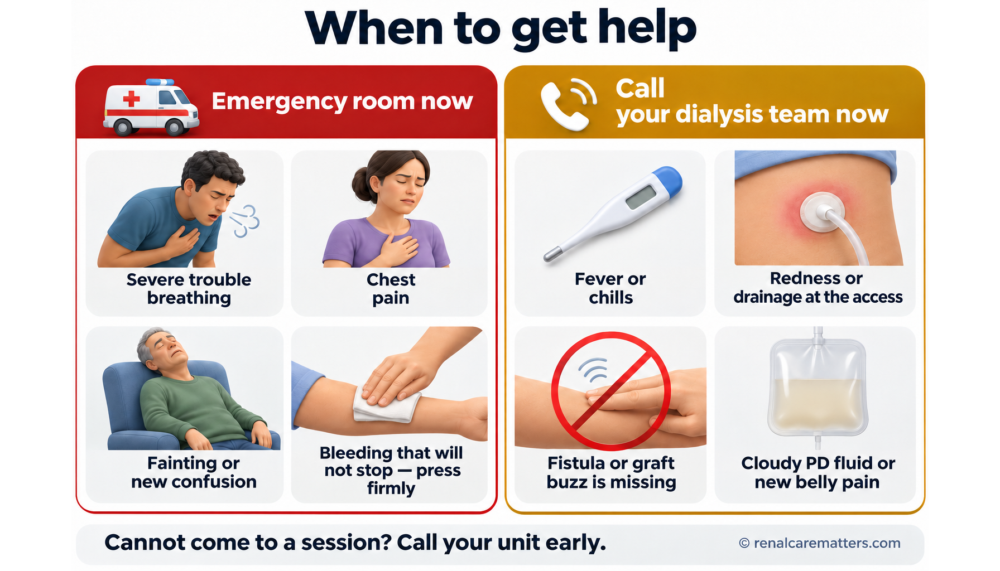
Red signs mean emergency care now. Amber signs mean a call to your dialysis team the same day.Ang pulang senyales ay nangangahulugang emergency na pangangalaga ngayon din. Ang amber na senyales ay nangangahulugang tawag sa iyong dialysis team sa parehong araw.Ang pulang timailhan nagpasabot og emergency nga pag-atiman karon dayon. Ang amber nga timailhan nagpasabot og tawag sa imong dialysis team sa samang adlaw.Deng malutung senyales buri dang sabian emergency a pamangalaga ngeni mismu. Deng amber a senyales buri dang sabian aus king dialysis team yu king pareung aldo.
PD
Peritoneal dialysis
In the PhilippinesSa PilipinasSa PilipinasKing Pilipinas
Coverage, cost, and a backup planCoverage, gastos, at reserbang planoCoverage, gasto, ug reserbang planoCoverage, gastus, at reserbang planu
Many families still carry the memory of a time when dialysis had to be rationed by what the household could pay. Coverage has changed. Since October 2024, the Philippine Health Insurance Corporation (PhilHealth) pays up to ₱6,350 per hemodialysis session for up to 156 sessions a year, which is three a week, for members with stage 5 CKD who are registered in the PhilHealth Dialysis Database. Peritoneal dialysis and kidney transplant are covered under separate Z Benefit packages. Rules are amended from time to time, so confirm the current ones with your unit.Dala pa rin ng maraming pamilya ang alaala ng panahong kailangang tipirin ang dialysis ayon sa kayang bayaran ng sambahayan. Nagbago na ang coverage. Mula Oktubre 2024, nagbabayad ang Philippine Health Insurance Corporation (PhilHealth) ng hanggang ₱6,350 kada session ng hemodialysis hanggang 156 session kada taon, na katumbas ng tatlo kada linggo, para sa mga miyembrong may stage 5 CKD na nakarehistro sa PhilHealth Dialysis Database. Sakop ang peritoneal dialysis at kidney transplant sa hiwalay na mga Z Benefit package. Paminsan-minsang binabago ang mga patakaran, kaya kumpirmahin ang kasalukuyan sa iyong unit.Daghang pamilya ang nagdala pa sa handomanan sa panahon nga kinahanglang tipigan ang dialysis sumala sa makaya bayaran sa panimalay. Nausab na ang coverage. Sukad Oktubre 2024, ang Philippine Health Insurance Corporation (PhilHealth) mobayad og hangtod ₱6,350 matag session sa hemodialysis hangtod 156 ka session matag tuig, nga katumbas sa tulo matag semana, para sa mga miyembro nga adunay stage 5 CKD nga narehistro sa PhilHealth Dialysis Database. Ang peritoneal dialysis ug kidney transplant sakop sa lahi nga mga Z Benefit package. Usbon ang mga lagda matag karon ug unya, mao nga kumpirmaha ang kasamtangan sa imong unit.Dakal a pamilya ing dadala da pa ing alaala ning panaun a kailangan yang tipiran ing dialysis agpang king agyu nang bayaran ning bale. Mibayu ne ing coverage. Manibat Oktubre 2024, ing Philippine Health Insurance Corporation (PhilHealth) mamayad yang anggang ₱6,350 kada session ning hemodialysis anggang 156 session kada banua, a katumbas ning atlu kada duminggu, para kareng miyembrung atin stage 5 CKD a makarehistru king PhilHealth Dialysis Database. Ing peritoneal dialysis at kidney transplant sakup la king hiwalay a Z Benefit package. Mababayu la reng patakaran paminsan-minsan, kaya kumpirman ye ing kasalungsungan king unit yu.
Ask about registration: “Am I registered in the PhilHealth Dialysis Database, and is this unit accredited?”Magtanong tungkol sa rehistro: “Nakarehistro ba ako sa PhilHealth Dialysis Database, at accredited ba ang unit na ito?”Pangutana bahin sa rehistro: “Narehistro ba ko sa PhilHealth Dialysis Database, ug accredited ba kining unit?”Mangutang kayu tungkul king rehistru: “Makarehistru ku king PhilHealth Dialysis Database, at accredited ya ing unit a ini?”
Ask for a written quote: “What is covered in each session, and what will I pay myself for medicines, laboratory tests, or supplies?”Humingi ng nakasulat na quotation: “Ano ang sakop sa bawat session, at ano ang babayaran ko mismo para sa gamot, laboratoryo, o supply?”Pangayo og sinulat nga quotation: “Unsa ang sakop sa matag session, ug unsa ang akong bayaran mismo para sa tambal, laboratoryo, o supply?”Manyawad kayung makasulat a quotation: “Nanu ing sakup king balang session, at nanu ing bayaran ku mismu para king panulu, laboratoryu, o supply?”
Count the costs outside the unit: fares, food on treatment days, and a companion’s lost workday. In a Philippine cost study, these travel and lost-income costs were the main difference between dialysis and transplant.Bilangin ang gastos sa labas ng unit: pamasahe, pagkain sa araw ng gamutan, at nawalang araw ng trabaho ng kasama. Sa isang pag-aaral ng gastos sa Pilipinas, ang mga gastos na ito sa biyahe at nawalang kita ang pangunahing pagkakaiba ng dialysis at transplant.Ihapa ang gasto gawas sa unit: pamasahe, pagkaon sa adlaw sa pagtambal, ug nawalang adlaw sa trabaho sa kauban. Sa usa ka pagtuon sa gasto sa Pilipinas, kining mga gasto sa biyahe ug nawalang kita mao ang pangunang kalainan sa dialysis ug transplant.Bilangan yu ing gastus king lual ning unit: pamasahe, pamangan king aldo ning pamanulu, at mewalang aldo ning obra ning abe. King metung a pamag-aral king gastus king Pilipinas, deng gastus a reti king biyahe at mewalang kita ing pangunang pamialiwa ning dialysis at transplant.
Name a backup: a second ride, and a second unit that could take you if yours closes for a typhoon, flood, or loss of water or power.Tukuyin ang reserba: pangalawang masasakyan, at pangalawang unit na maaaring tumanggap sa iyo kung magsara ang sa iyo dahil sa bagyo, baha, o pagkawala ng tubig o kuryente.Ilha ang reserba: ikaduhang masakyan, ug ikaduhang unit nga makadawat kanimo kon magsira ang imoha tungod sa bagyo, baha, o pagkawala sa tubig o kuryente.Tukuyan ye ing reserba: kadwang saken, at kadwang unit a malyaring tumanggap kekayu nung sumara ing kekayu uli ning bagyu, albug, o pangawala ning danum o kuryenti.
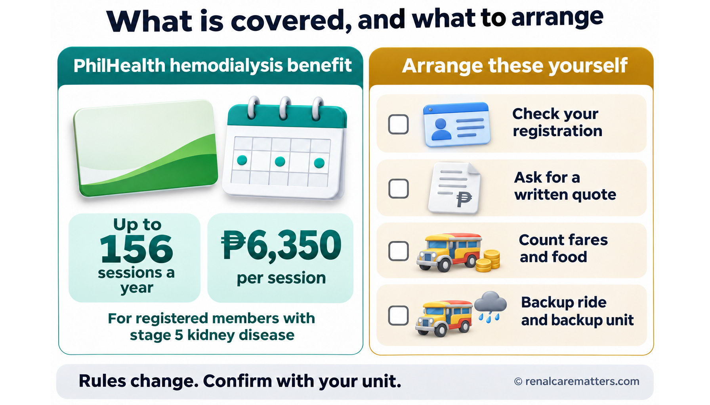
What is covered, and what to arrange yourself: registration, a written quote, travel costs, and a backup ride and unit.Ano ang sakop, at ano ang ikaw ang mag-aayos: rehistro, nakasulat na quotation, gastos sa biyahe, at reserbang masasakyan at unit.Unsa ang sakop, ug unsa ang ikaw ang mohikay: rehistro, sinulat nga quotation, gasto sa biyahe, ug reserbang masakyan ug unit.Nanu ing sakup, at nanu ing ika ing mag-ayus: rehistru, makasulat a quotation, gastus king biyahe, at reserbang saken at unit.
PhilHealth
Philippine Health Insurance Corporation
Distance is a real barrier. A 2026 national mapping study estimated that in the typical region about two thirds of people live within one hour of a hemodialysis facility and about half within two hours of a peritoneal dialysis facility, with far lower figures in island and mountain provinces. If you live far from a unit, raise it early: it affects which treatment fits, and whether home peritoneal dialysis deserves a second look. Keep the dialysis disaster checklist with your papers, and see Typhoon and Disaster Preparedness, PhilHealth Z Packages, and the PWD Card guide.Totoong hadlang ang layo. Tinantiya ng isang pambansang pag-aaral ng pagmamapa noong 2026 na sa karaniwang rehiyon, mga dalawang-katlo ng mga tao ang nakatira sa loob ng isang oras mula sa pasilidad ng hemodialysis at mga kalahati sa loob ng dalawang oras mula sa pasilidad ng peritoneal dialysis, na mas mababa pa sa mga lalawigang pulo at bulubundukin. Kung malayo ka sa unit, banggitin ito nang maaga: nakaaapekto ito sa kung aling gamutan ang babagay, at kung dapat bang muling tingnan ang peritoneal dialysis sa bahay. Itabi ang dialysis disaster checklist kasama ng iyong mga papeles, at tingnan ang Typhoon and Disaster Preparedness, PhilHealth Z Packages, at ang gabay sa PWD Card.Tinuod nga babag ang kalayo. Gibanabana sa usa ka nasyonal nga pagtuon sa pagmapa niadtong 2026 nga sa kasagarang rehiyon, mga dos-tersiya sa mga tawo ang nagpuyo sulod sa usa ka oras gikan sa pasilidad sa hemodialysis ug mga katunga sulod sa duha ka oras gikan sa pasilidad sa peritoneal dialysis, nga mas ubos pa sa mga probinsyang isla ug bukiron. Kon layo ka sa unit, isulti kini og sayo: makaapekto kini kon unsang pagtambal ang mohaom, ug kon angay bang tan-awon pag-usab ang peritoneal dialysis sa balay. Tipigi ang dialysis disaster checklist uban sa imong mga papeles, ug tan-awa ang Typhoon and Disaster Preparedness, PhilHealth Z Packages, ug ang giya sa PWD Card.Tutung sabat ing dayu. Tinantia ning metung a national a mapping study inyang 2026 na king karaniwan a rehiyun, mga adwang-katlu da reng tau ing makatuknang kilub ning metung a oras ibat king pasilidad ning hemodialysis at mga kapitna kilub ning adwang oras ibat king pasilidad ning peritoneal dialysis, a mas mababa pa kareng probinsyang isla at bulubundukin. Nung marayu kayu king unit, sabian yu iti a maranun: makaapektu ya nung isanung pamanulu ing bage, at nung dapat yang lawan pasibayu ing peritoneal dialysis king bale. Itabi ye ing dialysis disaster checklist kayabe da reng papelis yu, at lawan ye ing Typhoon and Disaster Preparedness, PhilHealth Z Packages, at ing gabe king PWD Card.
ToolsMga KasangkapanMga HimanDeng Gamit
Tools to bring to your next visitMga kasangkapang dadalhin sa susunod mong konsultaMga himan nga dad-on sa imong sunod nga konsultaDeng gamit a dalan yu king tutuking konsulta yu
Try the CalculatorsSubukan ang mga CalculatorSulayi ang mga CalculatorSubukan yu la reng Calculator
A question I hope you’ll bring to your next visitIsang tanong na sana ay dalhin mo sa susunod mong konsultaUsa ka pangutana nga hinaot imong dad-on sa imong sunod nga konsultaMetung a kutang a sana dalan mu king tutuking konsulta mu
If you are afraid, tell us what part of dialysis frightens you most. If you’d like someone with you, bring them. I’d also like you to tell us one thing you want to keep doing, even if it sounds small. It might be getting to work, having dinner with your family, or feeling well enough to go for a walk. That gives us something to check on together after you start.Kung natatakot ka, sabihin mo sa amin kung aling bahagi ng dialysis ang pinakakinatatakutan mo. Kung gusto mong may kasama, isama mo siya. Gusto ko ring sabihin mo sa amin ang isang bagay na gusto mong patuloy na magawa, kahit mukhang maliit. Maaaring ito ay ang makapasok sa trabaho, makasalo sa hapunan ang iyong pamilya, o maging sapat ang lakas para makapaglakad-lakad. Nagbibigay iyon sa atin ng bagay na sabay nating babalikan pagkatapos mong magsimula.Kon nahadlok ka, sultihi mi kon unsang bahin sa dialysis ang imong labing gikahadlokan. Kon gusto nimo nga adunay kauban, dad-a siya. Gusto usab nako nga sultihan mi nimo og usa ka butang nga gusto nimong padayon nga mabuhat, bisan morag gamay. Mahimong kini ang pag-adto sa trabaho, panihapon uban sa imong pamilya, o igo nga kusog aron makalakaw-lakaw. Maghatag kana kanato og butang nga dungan natong balikan human ka makasugod.Nung tatakut ka, sabian mu kekami nung isanung parti ning dialysis ing pekatatakutan mu. Nung buri mung atin kang abe, iyabe me. Buri ku muring sabian mu kekami ing metung a bage a buri mung tuluy-tuluy a agawa, agyang balamu malati ya. Malyaring ini ing makapunta king obra, mangan apunan kayabe ning pamilya mu, o sapat a sikan bang makalakad-lakad. Mamye ya keta mung bage a abe-abe tamung balikan kaybat mung magumpisa.
Questions & AnswersMga Tanong at SagotMga Pangutana ug TubagDeng Kutang at Pakibat
Questions patients and families often askMga tanong na madalas itanong ng mga pasyente at pamilyaMga pangutana nga kanunay ipangutana sa mga pasyente ug pamilyaDeng kutang a malimit dang ikutang deng pasyenti at pamilya
Does starting dialysis mean my kidneys will never work again?Ibig bang sabihin ng pagsisimula ng dialysis na hindi na muling gagana ang aking mga bato?Nagpasabot ba ang pagsugod sa dialysis nga dili na gyud molihok ang akong mga kidney?Buri na bang sabian ning pamagumpisa king dialysis na e na la gumana pasibayu deng batu ku?
It depends on the cause. In long-standing chronic kidney disease, dialysis is usually ongoing until a transplant. After a sudden illness with acute kidney injury, the kidneys sometimes recover, which is why your team should tell you which situation applies and who is checking.Depende sa sanhi. Sa matagal nang chronic kidney disease, karaniwang tuloy-tuloy ang dialysis hanggang sa transplant. Pagkatapos ng biglaang sakit na may acute kidney injury, minsan ay gumagaling ang mga bato, kaya dapat sabihin sa iyo ng team kung aling sitwasyon ang sa iyo at kung sino ang nagbabantay.Depende sa hinungdan. Sa dugay nang chronic kidney disease, kasagaran padayon ang dialysis hangtod sa transplant. Human sa kalit nga sakit nga adunay acute kidney injury, usahay mamaayo ang mga kidney, mao nga angay isulti sa imong team kon asa nga sitwasyon ang imoha ug kinsa ang nagbantay.Makadepende king sangkan. King malwat nang chronic kidney disease, karaniwan tuluy-tuluy ing dialysis anggang king transplant. Kaybat ning biglang sakit a atin acute kidney injury, neng kayi kakayap la reng batu, kaya dapat nang sabian ning team mu nung isanung sitwasyun ing keka at nung ninu ing manalben.
Will I feel better right away?Bubuti ba agad ang pakiramdam ko?Moarang-arang ba dayon ang akong gibati?Sumanting ya agad ing panamdam ku?
Breathlessness and swelling from fluid often ease within the first sessions. Appetite and nausea usually take weeks. Tiredness, itching, sleep, and mood can take longer and often need their own treatment, so keep reporting them.Ang hingal at pamamanas dahil sa tubig ay kadalasang gumagaan sa mga unang session. Ang gana sa pagkain at pagduduwal ay karaniwang inaabot ng ilang linggo. Ang pagkapagod, pangangati, tulog, at kalooban ay maaaring mas matagal at madalas ay kailangan ng sariling gamutan, kaya patuloy itong iulat.Ang paghangos ug paghubag tungod sa tubig kasagaran mohupay sa unang mga session. Ang gana sa pagkaon ug kasukaon kasagaran moabot og mga semana. Ang kakapoy, katol, tulog, ug pagbati mahimong mas dugay ug kasagaran nagkinahanglan og kaugalingong pagtambal, mao nga padayon kining i-report.Ing hingal at pamamanas uli ning danum karaniwan gagaan la kareng mumunang session. Ing gana king pamangan at pamandiri karaniwan aabutan lang mapilan a duminggu. Ing pagal, gatal, tudtud, at lub malyari lang mas makaba at malimit kailangan da ing sarili dang pamanulu, kaya tuluy-tuluy yu lang i-report.
Is hemodialysis painful?Masakit ba ang hemodialysis?Sakit ba ang hemodialysis?Masakit ya ing hemodialysis?
The needles sting when they go in, and numbing cream or spray can help. The treatment itself should not hurt. Cramps, headache, or dizziness can happen, especially when a lot of fluid is removed, and the nurse can adjust the treatment if you speak up.Mahapdi ang karayom kapag itinutusok, at makatutulong ang pampamanhid na cream o spray. Hindi dapat masakit ang gamutan mismo. Maaaring magkaroon ng pulikat, sakit ng ulo, o hilo, lalo na kapag maraming tubig ang inaalis, at kayang i-adjust ng nurse ang gamutan kung magsasabi ka.Hapdos ang dagom kon itusok, ug makatabang ang cream o spray nga pampamanhid. Ang pagtambal mismo dili angay nga sakit. Mahimong adunay kalambre, labad sa ulo, o kalipong, labi na kon daghang tubig ang kuhaon, ug ang nurse maka-adjust sa pagtambal kon mosulti ka.Masakit ya ing karayum potang ituturuk, at makasaup ing pampamanhid a cream o spray. Ing pamanulu mismu e ya dapat masakit. Malyaring atin pulikat, sakit buntuk, o liu, lalu na nung dakal a danum ing lalako, at agyu neng i-adjust ning nurse ing pamanulu nung sabian yu.
What happens if I miss a session?Ano ang mangyayari kapag may nalaktawan akong session?Unsa ang mahitabo kon adunay malaktawan nako nga session?Nanu ing malyari nung atin kung milaktawan a session?
Fluid, potassium, and acid keep building up, and the risk rises with each missed treatment. Call your unit as soon as you know you cannot come so they can offer another slot. If you become breathless, very weak, or feel your heart beating irregularly, go to the emergency room.Patuloy na naiipon ang tubig, potassium, at asido, at tumataas ang panganib sa bawat nalaktawang gamutan. Tawagan ang iyong unit sa sandaling alam mong hindi ka makakapunta upang makapag-alok sila ng ibang slot. Kung hingalin ka, manghina nang husto, o maramdaman mong iregular ang tibok ng iyong puso, pumunta sa emergency room.Padayon nga matigom ang tubig, potassium, ug asido, ug motaas ang risgo sa matag malaktawan nga pagtambal. Tawagi ang imong unit sa dihang mahibaloan nimo nga dili ka makaadto aron makatanyag sila og laing slot. Kon maghangos ka, maluya pag-ayo, o bation nimo nga dili regular ang pitik sa imong kasingkasing, adto sa emergency room.Tuluy-tuluy yang mitipun ing danum, potassium, at acid, at tatas ya ing peligru king balang milaktawan a pamanulu. Awsan ye ing unit yu agad nung balu yu nang e kayu makapunta bang makaaluk lang aliwang slot. Nung hingalan kayu, mayna kayung masyadu, o apakiramdaman yung iregular ing tibuk ning pusu yu, munta kayu king emergency room.
Can I still work, travel, or care for my family?Makakapagtrabaho, makakabiyahe, o makakapag-alaga pa ba ako ng aking pamilya?Makatrabaho, makabiyahe, o makaatiman pa ba ko sa akong pamilya?Agyu ku pa bang mag-obra, magbiyahe, o alagan ing pamilya ku?
Many people do, with adjustments. The first months are usually the hardest, and energy often improves as anemia, nutrition, and the dialysis prescription are tuned. Tell your team which role matters most so the schedule and treatment can be built around it. Travel is possible with advance arrangements at a unit near your destination.Marami ang nakagagawa nito, na may mga pagbabago. Karaniwang pinakamahirap ang mga unang buwan, at madalas bumubuti ang lakas habang inaayos ang anemia, nutrisyon, at reseta ng dialysis. Sabihin sa iyong team kung aling tungkulin ang pinakamahalaga upang maibagay roon ang iskedyul at gamutan. Posible ang pagbiyahe kung may paunang pag-aayos sa unit na malapit sa iyong pupuntahan.Daghan ang makahimo niini, nga adunay mga kausaban. Ang unang mga bulan kasagaran mao ang labing lisod, ug kasagaran moarang-arang ang kusog samtang gi-ayo ang anemia, nutrisyon, ug reseta sa dialysis. Sultihi ang imong team kon unsang papel ang labing importante aron mahaom didto ang iskedyul ug pagtambal. Posible ang pagbiyahe kon adunay abanteng paghikay sa unit duol sa imong adtoan.Dakal la reng makagawa kaniti, a atin pamagbayu. Deng mumunang bulan karaniwan ila ing pekamasakit, at malimit sumanting ing sikan kabang aayusan ing anemia, nutrisyon, at reseta ning dialysis. Sabian yu king team yu nung isanung tungkulan ing pekaimportanti bang maibage karin ing schedule at pamanulu. Posibli ing pamagbiyahe nung atin maranun a pamag-ayus king unit a malapit king puntalan yu.
Is choosing not to have dialysis the same as giving up?Ang pagpiling huwag mag-dialysis ba ay kapareho ng pagsuko?Ang pagpili nga dili mag-dialysis parehas ba sa pagsurender?Ing pamamiling e mag-dialysis pareu ya king pamanyuku?
No. Conservative kidney management is active medical care that treats symptoms and complications without dialysis. It is often chosen by people who value independence and time at home above the chance of living somewhat longer. It is a decision to make with your nephrologist and family, and it can be reviewed.Hindi. Ang conservative kidney management ay aktibong pangangalagang medikal na gumagamot sa mga sintomas at komplikasyon nang walang dialysis. Madalas itong piliin ng mga taong mas pinahahalagahan ang pagsasarili at panahon sa bahay kaysa sa tsansang mabuhay nang medyo mas matagal. Ito ay pasyang ginagawa kasama ang iyong nephrologist at pamilya, at maaari itong balikan.Dili. Ang conservative kidney management aktibong medikal nga pag-atiman nga motambal sa mga sintomas ug komplikasyon nga walay dialysis. Kasagaran kining pilion sa mga tawo nga mas nagpabili sa kagawasan ug panahon sa balay kay sa posibilidad nga mabuhi og medyo mas dugay. Desisyon kini nga himoon uban sa imong nephrologist ug pamilya, ug mahimo kining balikan.Ali. Ing conservative kidney management aktibu yang medikal a pamangalaga a manulu kareng sintomas at komplikasyun a alang dialysis. Malimit deng pilinan deng taung mas pahalagan da ing pamagsarili at panaun king bale kesa king tsansang mabie medyu mas makaba. Desisyun ya ining gagawan kayabe ning nephrologist at pamilya yu, at malyari yang balikan.
Clinical Overview
What changes at the start of dialysis, and what does not
Dialysis replaces part of the kidney's excretory work. It does not restore endocrine function, and it does not by itself reverse the nutritional, functional, and psychological losses that accumulate in the year before the start. This guide assumes the decision to start has been made or is imminent. It covers the transition: explaining the indication, the first 90 days, what patients can expect to improve, how to talk about prognosis, and how to keep options open. For the timing decision itself see When Should Dialysis Start?, and for pre-dialysis planning see Preparing for Dialysis.
Physiology first. Native kidneys clear solute continuously, 10,080 minutes a week. Thrice-weekly in-center hemodialysis (HD) delivers about 720 minutes. Expressed as a continuous equivalent, a weekly standard Kt/V of 2.3 in a patient with a urea distribution volume of 40 L corresponds to 2.3 × 40 L ÷ 10,080 min, or about 9 mL/min of urea clearance. That is enough to control volume, potassium, hydrogen ion, and small water-soluble solutes in most patients. It is far less effective for protein-bound solutes and middle molecules, and it supplies no erythropoietin, no 1α-hydroxylation of vitamin D, and no tubular secretion. This is established physiology, and it predicts the clinical pattern: symptoms driven by volume, hyperkalemia, acidosis, and small-solute uremia (dyspnea, edema, nausea, anorexia) respond early, while fatigue, pruritus, sleep disturbance, sexual dysfunction, and low mood respond partially or not at all, because they are multifactorial.
What that means for counseling. “You will feel better” is accurate for congestion and uremic gastrointestinal symptoms and unreliable for almost everything else. A more defensible promise is that dialysis treats the specific problems that made waiting unsafe, and that the rest of the recovery depends on anemia management, nutrition, physical reconditioning, treatment of depression, and a prescription the patient can tolerate. The cohort data below are consistent with this: on average the decline stops, and the rebound is modest.
Hemodialysis replaces part of excretory function in about 720 of the week's 10,080 minutes. Symptoms tied to volume, potassium, acid, and small solutes respond early; multifactorial symptoms need their own treatment.
HD
Hemodialysis
stdKt/V
Weekly standard Kt/V
EPO
Erythropoietin
Timing
Indication, not threshold: explaining “why now”
Guideline position. The Kidney Disease: Improving Global Outcomes (KDIGO) 2024 chronic kidney disease (CKD) guideline addresses initiation in Practice Points 5.4.1 to 5.4.3. These are ungraded practice points, not graded recommendations. They advise starting on a composite of symptoms and signs attributable to kidney failure (including serositis, pruritus, and acid–base or electrolyte abnormalities), inability to control volume or blood pressure, progressive deterioration in nutritional status refractory to intervention, and cognitive impairment, weighed with quality of life and patient preference. The guideline notes that this often, but not invariably, occurs at a glomerular filtration rate (GFR) of 5 to 10 mL/min/1.73 m², and it suggests planning for preemptive transplantation or dialysis access when GFR is below 15 to 20 mL/min/1.73 m² or the two-year risk of kidney replacement therapy (KRT) exceeds 40%. Those are planning thresholds, not start thresholds.
Trial evidence. The IDEAL trial randomized 828 adults in Australia and New Zealand with progressive CKD to planned initiation at an estimated GFR (eGFR) of 10.0 to 14.0 versus 5.0 to 7.0 mL/min/1.73 m² by Cockcroft–Gault. Over a median 3.59 years, 152 of 404 (37.6%) versus 155 of 424 (36.6%) died: hazard ratio (HR) 1.04, 95% confidence interval (CI) 0.83 to 1.30, an absolute difference of 1.0 percentage point. The median time to dialysis was 1.80 versus 7.40 months, and 75.9% of the late-start group began above the 7.0 target because symptoms developed. IDEAL therefore demonstrates that an eGFR-triggered early start confers no survival advantage under close follow-up. It does not show that delaying past the onset of uremic symptoms is safe; nearly everyone in the late arm was started when symptoms appeared.
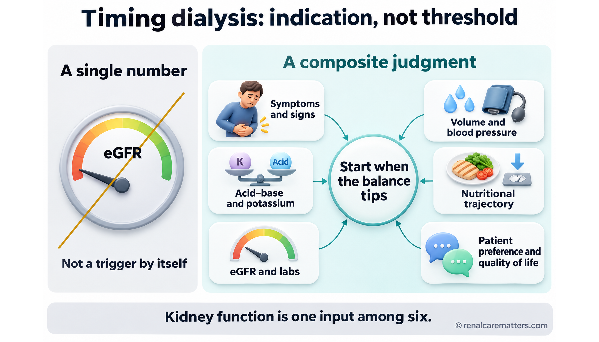
Timing rests on a composite judgment. The estimated glomerular filtration rate is one input, not the trigger.
eGFR
Estimated glomerular filtration rate
The opening vignette, read clinically Clinician note
The case illustrates judgment across symptoms, nutritional trajectory, acid–base status, and response to medical treatment, in a patient whose arteriovenous graft was ready. Metabolic acidosis that persists despite alkali therapy, pruritus attributable to kidney failure, and weight loss that continues despite dietetic intervention are indications in context under KDIGO 2024. No single bicarbonate, albumin, hemoglobin, or uric acid value sets the date.
Anemia runs in parallel. Severe anemia despite an erythropoiesis-stimulating agent (ESA) is not, by itself, an indication for dialysis, and dialysis will not correct it. The KDIGO 2026 anemia guideline directs evaluation of ESA hyporesponsiveness: iron status, occult blood loss, inflammation and infection, nutritional deficiency, hyperparathyroidism, and adherence. Transfusion decisions follow symptoms and hemodynamics, with allosensitization in mind for transplant candidates, not a hemoglobin value alone.
Describing the years before dialysis. Present the pre-dialysis course as an individual trajectory under follow-up. Do not attribute a specific number of dialysis-free years to adherence; the counterfactual is unknown.
✅
Language that works at the bedside
Name the indication in one sentence the patient can repeat (“Your blood is carrying more acid than medicines can correct, and you are losing weight”). State what you expect dialysis to change and by when. State what you are worried could happen with delay. Then ask what frightens them. Fear of dialysis often rests on a relative who started late and sick, or on an era when sessions were rationed by household income; both deserve a direct answer.
Patient-Reported Outcomes
Symptoms, function, and recovery time around the start
Before the start. In the European Quality (EQUAL) study of adults aged 65 or older with incident eGFR at or below 20 mL/min/1.73 m², symptom accrual during advanced CKD was slow on average: 0.47 additional symptoms per year (95% CI 0.37 to 0.58) and 0.75 per 5 mL/min/1.73 m² fall in eGFR (0.58 to 0.91) across 4,730 assessments in 1,135 patients, with women reporting more symptoms throughout. Against that slow background, the final year stands out. Among 456 participants who went on to dialysis (mean age 76, 75% men, mean eGFR 8 at initiation), Dialysis Symptom Index (DSI) burden rose by 13.3 points on its 0-to-150 scale (95% CI 9.5 to 17.0) and symptom count by 3.6 (2.5 to 4.6) in the preceding year. In the companion analysis of 457 participants, the 36-Item Short Form Survey (SF-36) mental component summary fell by 13 points (−17 to −9) and the physical component summary by 11 (−15 to −7).
After the start. In the following year, symptom burden changed by −5.9 points and symptom count by −0.9 (−3.4 to +1.5); the authors characterize this as stabilization. Mental and physical summary scores changed by +2 (−7 to +11) and −2 (−11 to +7). Fatigue, reported by 81% at initiation, eased somewhat; sexual symptoms increased further. These are before-and-after observations in survivors who completed questionnaires, without a concurrent untreated comparator, so they describe the course on dialysis and cannot isolate its effect.
Function in the frailest. Among United States nursing-home residents starting dialysis, pre-dialysis functional status was maintained in 39% at three months; by 12 months 58% had died and function was maintained in 13% (Kurella Tamura et al., 2009). This is an institutionalized, highly comorbid population observed without a comparator, and it should inform counseling for similar patients, not for ambulatory adults.
Symptoms carry prognostic information. In 1,818 adults starting in-center HD in the United States, a high symptom-burden class on the Kidney Disease Quality of Life 36-item instrument (KDQOL-36) was associated with a 20% higher hazard of first hospitalization, and a one-category worsening in pain interference or fatigue with 12% and 8% higher hazards (Nair et al., 2026). The association is observational. It justifies asking about both symptoms; it does not show that tracking them prevents admissions.
Recovery time. The single question “How long does it take you to recover from a dialysis session?” has test–retest reliability of r = 0.96 at three months and correlates with fatigue and vitality scales. In 6,040 participants of the Dialysis Outcomes and Practice Patterns Study (DOPPS), 32% recovered within 2 hours, 41% in 2 to 6 hours, 17% in 7 to 12 hours, and 10% needed more than 12 hours. Recovery beyond 12 hours, compared with 2 to 6 hours, was associated with first hospitalization (HR 1.22, 95% CI 1.09 to 1.37) and death (HR 1.47, 1.19 to 1.83). Longer recovery was associated with greater intradialytic weight loss and with dialysate sodium below 140 mEq/L (odds ratio 1.72, 1.37 to 2.16, in facilities using uniform dialysate sodium). These modifiable correlates make recovery time a practical review item: ultrafiltration rate, target weight, dialysate sodium and temperature, and antihypertensive timing. See Post-Dialysis Fatigue.
Treating symptoms is effective. The Technology Assisted Stepped Collaborative Care (TĀCcare) randomized controlled trial (RCT) enrolled 160 adults on long-term HD with clinically significant fatigue, pain, or depression. Twelve weekly sessions of cognitive behavioral therapy by telehealth, with stepped pharmacotherapy, improved fatigue at three months by 2.81 points on the Functional Assessment of Chronic Illness Therapy–Fatigue scale (FACIT-F; 95% CI 0.86 to 4.75; higher is better) and pain severity by −0.96 on the Brief Pain Inventory (BPI; −1.70 to −0.23) compared with attention control, sustained at six months (3.73 and −1.49). The effect on depression was statistically significant but small. In the Dialysis Training Therapy (DiaTT) cluster-randomized trial, supervised intradialytic endurance and resistance exercise improved the 60-second sit-to-stand count by 3.85 repetitions at 12 months (95% CI 2.22 to 5.48) among 917 analyzed patients. Both trials enrolled prevalent HD patients, so applying them to the first 90 days is an inference.
Mood and caregivers. Depression in people on dialysis is associated with higher mortality (HR 1.15, 95% CI 1.10 to 1.21, in one cohort study) and is treatable with psychological and pharmacological approaches. Caregivers decline too: in 202 patient–caregiver dyads followed through the first year, caregivers' depressive symptoms rose and physical health-related quality of life fell, with no difference between home and in-center dialysis. Ask about the caregiver at day 30 and day 90.
EQUAL cohort, adults aged 65 or older: symptom burden and quality of life worsen in the year before dialysis and stabilize, on average, in the year after. Observational, without an untreated comparator.
DSI
Dialysis Symptom Index
SF-36
36-Item Short Form Survey
MCS
Mental component summary
PCS
Physical component summary
EQUAL
European Quality study
The Transition
The first 90 days as a care pathway
Why the early period matters. In 86,886 DOPPS participants across 11 countries, mortality was 26.7 deaths per 100 patient-years (95% CI 25.6 to 27.9) in the first 120 days of HD, 16.9 (16.2 to 17.6) from day 121 to 365, and 13.7 (13.5 to 14.0) thereafter, so the early rate is roughly double the later one. The pattern held in every country studied. These rates are observational and bundle several things: unplanned starts, central venous catheters, the acute illness that precipitated the start, and the selection of sicker patients into early follow-up. They identify when to concentrate attention, not a harm of dialysis.
Unplanned starts dominate real practice. In a Singapore cohort of 502 patients, 72.3% started unplanned, with a median initiation admission of 17 days (interquartile range, IQR, 9 to 30) versus 4 days (1 to 11) for planned starts. In the Prepare for Kidney Care trial population (older, frail or multimorbid adults in the United Kingdom followed from an eGFR near 13), the supplementary data show that among the 102 participants who started dialysis, 46 began on a central venous catheter (CVC), 31 of 80 HD starts occurred during a hospitalization, and 13 (12.7%) died within 90 days of starting. Even with nephrology follow-up and a declared plan, the first weeks carry concentrated risk.
Catheters and infection in the Philippine setting. A retrospective Philippine hospital cohort reported a catheter-related bloodstream infection (CRBSI) rate of 6.72 episodes per 1,000 catheter-days, with gram-negative organisms predominating and 44.5% of isolates multidrug-resistant. Fever in a patient with a catheter is presumptive bacteremia until cultures say otherwise, and a catheter start should trigger an access plan under the Kidney Disease Outcomes Quality Initiative (KDOQI) 2019 End-Stage Kidney Disease (ESKD) Life-Plan approach, not an open-ended catheter. See A Lifeline That Lasts.
Is it acute kidney injury? A hospital start is not always maintenance dialysis. The 2025 American Society of Nephrology (ASN) guidance on outpatient dialysis-requiring acute kidney injury (AKI) calls for an explicit handoff that states the diagnosis, a named clinician responsible for monitoring recovery, regular reassessment using pre-dialysis chemistry and urine output, and a prescription that avoids intradialytic hypotension and nephrotoxins. It is consensus guidance built on limited trial evidence. Record the status as maintenance CKD, AKI requiring dialysis, or uncertain, and do not leave “uncertain” without an owner and a date.
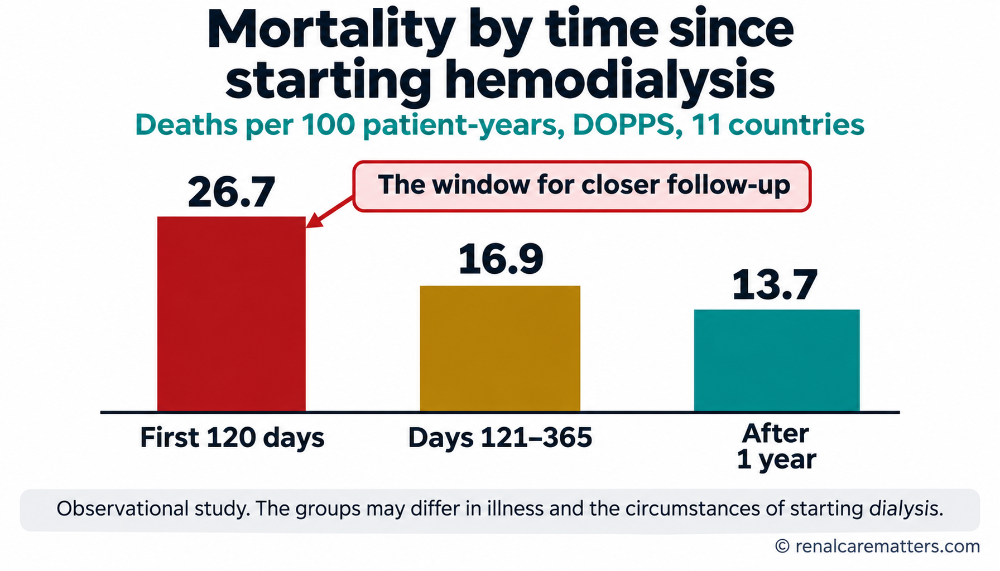
Mortality is highest in the first 120 days of hemodialysis and falls afterward. Observational data; the early excess reflects unplanned starts, catheters, and acute illness as well as time on dialysis.
HD
Hemodialysis
DOPPS
Dialysis Outcomes and Practice Patterns Study
Checkpoint
Team review
Document
Before discharge or after the first outpatient session
Confirm maintenance CKD, AKI requiring dialysis, or uncertain. Transfer orders, access details, target weight, serology, and medication reconciliation. Transport, language, and caregiver needs.
Indication in one sentence. After-hours number. Next session date and place. One patient-defined goal.
First week
Symptoms, blood pressure, volume, and access. Prescribed versus delivered treatment time. Appetite. Whether the patient can repeat access-care and missed-session instructions.
Recovery time after each session. Intradialytic symptoms and their timing.
Around day 30
Persistent symptoms: reconsider treatment tolerance, target weight, anemia, nutrition, mood, sleep, medicines, and non-renal causes. If the start was urgent, revisit access and modality. Transplant referral if appropriate. Caregiver strain.
Access plan with dates. Modality discussion held. Referral status.
Around day 90
Patient-defined goal, function, symptom burden, hospitalizations, and missed or shortened sessions, alongside adequacy and laboratory measures. For AKI, continue the separate recovery pathway.
One change, its owner, and the next review date.
Checkpoints are organizing prompts, not validated intervals. Clinical urgency, discharge instructions, and locally agreed follow-up take priority.
Older and Frail Adults
What the comparative evidence now says about dialysis versus conservative care
Prepare for Kidney Care (Lancet, November 2026). This pragmatic, open-label, superiority RCT in 31 United Kingdom kidney centers enrolled 445 adults (7% of 6,120 screened) who were aged 80 or older, or 65 to 79 with a World Health Organization performance status of at least 3 or a Davies comorbidity score of at least 2, and had an eGFR below 15 mL/min/1.73 m² (median 13 at baseline). They were randomized to prepare for responsive management, a protocolized form of comprehensive conservative kidney management (CKM), or to prepare for dialysis. Median age was 82 and 31% were women. After a mean 4.5 years, mean quality-adjusted life-years (QALYs) were 1.354 versus 1.472, an adjusted difference of −0.147 (95% CI −0.350 to 0.056; P = 0.16). Deaths occurred in 157 of 228 (69%) versus 136 of 217 (63%); the adjusted HR for all-cause mortality, a secondary outcome, was 1.10 (0.87 to 1.40). Hospital admission rates were similar, and dialysis access complications were fewer with responsive management (adjusted incidence rate ratio 0.41, 0.19 to 0.88).
How to read it. Three features govern interpretation. First, this is an intention-to-treat comparison of preparation strategies, not of dialysis versus no dialysis: only 42 of 228 (18%) and 60 of 217 (28%) ever started dialysis, and 27% and 24% left their allocated pathway. Second, a superiority trial that finds no difference has not shown equivalence; the interval is compatible with a loss of 0.35 QALYs, about four months of full health, and with a small gain. Third, participants were enrolled in outpatient clinics with time to plan, so the result does not address a patient presenting in pulmonary edema. Within those limits, the trial supports offering well-resourced CKM as a legitimate planned pathway to this population, with neither option presented as the default.
Target trial emulation (Montez-Rath et al., 2024). Among 20,440 United States veterans aged 65 or older (mean 77.9) with eGFR below 12 mL/min/1.73 m² and no transplant referral, starting dialysis within 30 days versus continuing medical management with later dialysis allowed yielded 9.3 more days of survival over three years (95% CI −17.4 to 30.1) and 13.6 fewer days at home (7.7 to 20.5 fewer). Compared with forgoing dialysis entirely, starting yielded 77.6 more days alive (62.8 to 91.1) and 14.7 fewer days at home (11.2 to 16.5 fewer). Keep the two comparators separate when quoting it. Residual confounding is likely because symptoms at eligibility were unmeasured, and the cohort was overwhelmingly male.
Where the two agree. A randomized comparison of strategies in the United Kingdom and an observational emulation in the United States point the same way: in older, multimorbid adults, survival differences between a dialysis-oriented and a conservative pathway are modest and come with trade-offs in time at home and procedures. Neither informs decisions in younger or transplant-eligible patients.
Making the decision the patient's. In the VIDEO-KD trial, an RCT of 453 adults aged 65 or older with advanced CKD at 12 United States clinics, a video decision aid plus a patient-recorded declaration of goals raised documented advance care planning at 12 months from 40.0% to 56.6% (difference 16.6 percentage points, 95% CI 7.5 to 25.7). After viewing, fewer were undecided (13.2% versus 41.3%) and more preferred CKM (50.7% versus 31.8%). Documentation is a process outcome; effects on goal-concordant care and survival were not established.
Guidance. The 2026 ASN Kidney Health Guidance defines CKM as customized CKD care, symptom management, and navigation of care transitions through end of life, delivered by an interdisciplinary team with care partners. A 2026 international consensus on frailty in CKD (63 statements) advises routine multidimensional frailty screening, resistance exercise, adequate protein, medication optimization, and flexible KRT delivery including less intensive schedules and assisted home dialysis, guided by serial frailty measurement. Where the answer is unclear, a time-limited trial of dialysis with pre-agreed review criteria is a reasonable structure; see Dialysis in the Elderly and Incremental Dialysis.
Prepare for Kidney Care compared two preparation strategies, not dialysis versus no dialysis. A minority in each arm started dialysis, and neither strategy was shown superior.
QALY
Quality-adjusted life-year
eGFR
Estimated glomerular filtration rate
Prognosis
Answering “How long can I live?” without a calculator
Lead with function, then offer numbers. Most patients asking about survival are asking what their life will be like. Offer best case, worst case, and most likely course for the activities they have named, and offer registry figures to those who want them, with the cohort attached.
Horizon from day 1 of dialysis
Kaplan–Meier survival (95% CI)
Entry cohort
90 days
94.9% (94.8 to 95.0)
2017–2021
1 year
84.7% (84.6 to 84.9)
2017–2021
2 years
73.3% (73.1 to 73.5)
2017–2021
5 years
41.4% (41.1 to 41.6)
2014–2018
European Renal Association (ERA) Registry Annual Report 2023 (34 countries in Europe and bordering the Mediterranean); unadjusted, all ages, incident dialysis, censored at transplantation, recovery of kidney function, loss to follow-up, or study end. The 90-day figure is from the full report (Table B.6.5); the others also appear in the peer-reviewed summary. The two entry cohorts overlap in part and should not be drawn as one curve. No Philippine calibration exists.
Age dominates the spread. In the same report, five-year survival on dialysis counted from day 91 ranged from 87% at ages 0 to 19 to 25% at age 75 or older. Among prevalent patients in 2019 to 2023, expected remaining lifetime on dialysis was 68% lower in men and 71% lower in women than in the general population, compared with 45% and 49% lower for those living with a functioning graft. The transplant comparison is confounded by selection of healthier candidates, though it is directionally consistent with the survival advantage of transplantation.
Why this site offers no life-expectancy calculator. Group survival does not transfer to individuals without a validated model. An external validation of a widely cited prevalent-HD prognostic model found moderate discrimination (C statistic 0.71 to 0.72) and systematic overprediction of mortality, with observed-minus-predicted survival gaps of 3.2%, 8.8%, and 12.9% at 6, 12, and 18 months. Adding patient-reported outcomes improves discrimination for two-year mortality in incident dialysis (area under the curve 0.806 to 0.826 in the derivation cohort, with larger gains in two replication cohorts), which reinforces their clinical value. Neither model estimates what an individual gains from starting dialysis, which is a causal question, and none has been calibrated in Filipino patients.
⚠️
Two rules for quoting numbers
Never derive a personal forecast from a cohort percentage, and never convert a hazard ratio into an absolute probability without the baseline risk from the same source. Quote an estimate only with its population, time origin, and interval.
Keeping Options Open
Modality, access, and transplant after the start
Modality is revisable. In a randomized non-inferiority trial at 36 Chinese centers (1,082 randomized, 725 completing per protocol, mean age 49.8), peritoneal dialysis (PD) was non-inferior to conventional in-center HD for the KDQOL burden-of-kidney-disease score at 48 weeks (geometric mean ratio 1.059, 95% CI 0.908 to 1.234). Deaths numbered 17 with PD and 31 with HD, and adverse events were more frequent with PD. The population was young with low comorbidity, so the result supports offering PD on equal terms to similar patients and should be extrapolated cautiously to older ones. The International Society for Peritoneal Dialysis (ISPD) 2020 recommendations frame PD prescription around the person's life goals, symptoms, volume status, and residual kidney function.
Transplant referral does not close when dialysis opens. The KDIGO 2020 guideline on transplant candidates recommends that all people with CKD G4 to G5 who are expected to reach kidney failure be informed about and considered for transplantation, and advises referring those already on dialysis once they are medically stable and kidney failure is deemed irreversible. A day-30 prompt catches patients whose urgent start bypassed that conversation. See Kidney Transplant.
Access. The KDOQI 2019 vascular access guideline replaces a fistula-first rule with an individualized ESKD Life-Plan that sequences modalities and accesses over the patient's expected course. For a patient who started on a catheter, the plan should name the next access, the surgeon or interventionist, and a date.
Philippine Context
Coverage, distance, and the costs outside the unit
Coverage. Philippine Health Insurance Corporation (PhilHealth) Circular 2024-0023 sets the HD benefit at ₱6,350 per session for up to 156 sessions per calendar year for stage 5 CKD beneficiaries registered in the PhilHealth Dialysis Database, a ceiling of ₱990,600 a year, effective October 9, 2024. Circular 2024-0036 defines the PD Z Benefit packages. Twice-weekly HD driven by an exhausted benefit should now be the exception; where it persists, look for registration gaps, transport, or facility charges outside the package. Confirm current circulars before quoting amounts.
Distance. A national geospatial model using 2023 facility data estimated that the median regional share of the population living within one hour of an HD facility was 67.9% (IQR across regions 62.4% to 82.6%), and within two hours of a PD facility 51.3% (43.2% to 67.6%), falling to 36% in Mimaropa. Integrating PD into existing HD facilities was projected to extend coverage to a further 11 million people. These are modeled travel times for the general population, not observed trips by dialysis patients.
Costs. A 2025 Philippine cost-of-illness analysis estimated annual direct medical costs of roughly ₱401,000 to ₱560,000 across KRT modalities, with direct non-medical and indirect costs of ₱37,920 to ₱246,480 for dialysis against ₱3,160 for transplant recipients. Transport and lost income, not the session fee, are what a covered household still pays. Employment data from Denmark show the scale of the problem in a high-income system: 11% of adults aged 18 to 65 were employed at dialysis initiation versus 61% of matched references. Philippine figures are not available, and the transport and recovery-time tools linked below exist to make this burden visible in clinic.
Evidence Summary
Key studies, designs, and how far each can be pushed
Study
Design and population
Key result (95% CI)
Interpretation
IDEAL, Cooper et al., 2010
RCT; 828 adults with progressive CKD; planned start at eGFR 10–14 vs 5–7 mL/min/1.73 m²; Australia and New Zealand
Death 37.6% vs 36.6%; HR 1.04 (0.83 to 1.30); 75.9% of late arm started above target for symptoms
RCT An eGFR-triggered early start does not improve survival under close follow-up. Does not test delay past symptoms.
EQUAL, de Rooij et al., 2022 (two reports)
Prospective cohort; 456 and 457 adults aged 65 or older starting dialysis; Europe
DSI burden +13.3 (9.5 to 17.0) in the year before, −5.9 in the year after; SF-36 mental −13 then +2 (−7 to +11); physical −11 then −2 (−11 to +7)
Cohort Decline stabilizes after the start. No untreated comparator; survivor and responder bias.
DOPPS, Robinson et al., 2014
Prospective cohort; 86,886 in-center HD patients; 11 countries
Cohort Identifies the high-risk window. Not a causal estimate of dialysis harm.
Prepare for Kidney Care, Caskey et al., 2026
Pragmatic open-label superiority RCT; 445 adults aged 80 or older, or 65–79 with frailty or multimorbidity; United Kingdom
QALYs 1.354 vs 1.472; difference −0.147 (−0.350 to 0.056); mortality HR 1.10 (0.87 to 1.40); 18% vs 28% started dialysis
RCT Neither preparation strategy shown superior. Not an equivalence result; not applicable to emergency starts.
Montez-Rath et al., 2024
Target trial emulation; 20,440 United States veterans aged 65 or older, eGFR below 12
Start within 30 days vs medical management: +9.3 days alive (−17.4 to 30.1) and −13.6 days at home over 3 years
Emulation Modest survival difference with less time at home. Residual confounding; few women.
TĀCcare, Jhamb et al., 2023
RCT; 160 adults on long-term HD with fatigue, pain, or depression; United States
Fatigue +2.81 FACIT-F (0.86 to 4.75); pain −0.96 BPI (−1.70 to −0.23) at 3 months
RCT, small Collaborative care reduces fatigue and pain. Prevalent patients; resource-intensive.
VIDEO-KD, Volandes et al., 2026
RCT; 453 adults aged 65 or older with advanced CKD; 12 United States clinics
Advance care planning documented 56.6% vs 40.0%; difference 16.6 points (7.5 to 25.7)
RCT Decision aid changes documentation and stated preference. Process outcome only.
Fan et al., 2022
Randomized non-inferiority trial; 1,082 incident patients; China
Burden-of-kidney-disease geometric mean ratio 1.059 (0.908 to 1.234) at 48 weeks
RCT PD non-inferior to HD for this outcome in young, low-comorbidity patients.
Nair et al., 2026
Longitudinal cohort; 1,818 adults starting in-center HD; United States
High symptom burden: 20% higher hazard of first hospitalization
Cohort Symptoms are prognostic. Does not show that monitoring prevents admissions.
ERA Registry, 2023 report
Registry; incident dialysis; 34 countries
Survival 84.7% at 1 year, 73.3% at 2 years, 41.4% at 5 years
Registry Group description, unadjusted, censored at transplant. Not individual prognosis.
Practice Points
A transition checklist for the unit
Starting dialysis: from recommendation to day 90
1
Name the indication. One sentence in plain language, written in the chart and given to the patient. If the reason is an eGFR value alone, reconsider.
2
Name the diagnosis. Maintenance CKD, AKI requiring dialysis, or uncertain. For the last two, assign a clinician and a date to reassess recovery.
3
Give the after-hours number and the red flags. Access bleeding with direct pressure, fever or chills, loss of thrill, cloudy PD effluent, missed session. Check that the patient can repeat them.
4
Ask for one goal. A specific activity in the patient's words, with a baseline in a unit they choose (minutes walked, meals attended, shifts worked).
5
Measure what the patient feels. Recovery time after each HD session and a validated symptom instrument at about day 30 and day 90. Treat fatigue, pain, pruritus, insomnia, and low mood as conditions with their own work-up.
6
Reopen the options at day 30. Access plan with dates, modality review if the start was urgent, transplant referral if eligible, and CKM or a time-limited trial where the patient is unsure.
7
Close the loop at day 90. Review the goal with function, hospitalizations, and missed sessions alongside adequacy. Record one change, its owner, and the next review date.
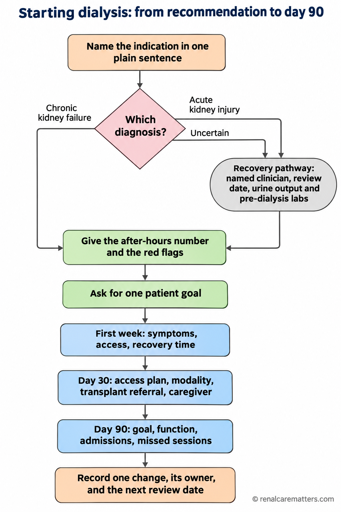
From recommendation to day 90: indication, diagnosis, safety net, one goal, then three reviews, with a separate recovery pathway for acute kidney injury.
Kidney Disease: Improving Global Outcomes (KDIGO) CKD Work Group. (2024). KDIGO 2024 clinical practice guideline for the evaluation and management of chronic kidney disease. Kidney International, 105(4S), S117–S314. https://doi.org/10.1016/j.kint.2023.10.018
Cooper, B. A., Branley, P., Bulfone, L., Collins, J. F., Craig, J. C., Fraenkel, M. B., Harris, A., Johnson, D. W., Kesselhut, J., Li, J. J., Luxton, G., Pilmore, A., Tiller, D. J., Harris, D. C., & Pollock, C. A. (2010). A randomized, controlled trial of early versus late initiation of dialysis. The New England Journal of Medicine, 363(7), 609–619. https://doi.org/10.1056/NEJMoa1000552
de Rooij, E. N. M., Meuleman, Y., de Fijter, J. W., Jager, K. J., Chesnaye, N. C., Evans, M., Caskey, F. J., Torino, C., Porto, G., Szymczak, M., Drechsler, C., Wanner, C., Dekker, F. W., & Hoogeveen, E. K. (2022). Symptom burden before and after dialysis initiation in older patients. Clinical Journal of the American Society of Nephrology, 17(12), 1719–1729. https://doi.org/10.2215/CJN.09190822
de Rooij, E. N. M., Meuleman, Y., de Fijter, J. W., Le Cessie, S., Jager, K. J., Chesnaye, N. C., Evans, M., Pagels, A. A., Caskey, F. J., Torino, C., Porto, G., Szymczak, M., Drechsler, C., Wanner, C., Dekker, F. W., & Hoogeveen, E. K. (2022). Quality of life before and after the start of dialysis in older patients. Clinical Journal of the American Society of Nephrology, 17(8), 1159–1167. https://doi.org/10.2215/CJN.16371221
Chesnaye, N. C., Wrackefeldt, J., Caskey, F. J., Dekker, F. W., Torino, C., Szymczak, M., Drechsler, C., Wanner, C., Vilasi, A., Meuleman, Y., Pippias, M., Stel, V. S., Jager, K. J., & Evans, M. (2026). The evolution of symptom burden in older men and women with advanced CKD. Nephrology Dialysis Transplantation, 41(10), 1817–1827. https://doi.org/10.1093/ndt/gfag045
Kurella Tamura, M., Covinsky, K. E., Chertow, G. M., Yaffe, K., Landefeld, C. S., & McCulloch, C. E. (2009). Functional status of elderly adults before and after initiation of dialysis. The New England Journal of Medicine, 361(16), 1539–1547. https://doi.org/10.1056/NEJMoa0904655
Nair, D., Cai, X., Hays, R. D., Aiyegbusi, O. L., Frazier, R. S., Isakova, T., & Peipert, J. D. (2026). Symptom burden after dialysis initiation and its association with hospitalization. Kidney Medicine, 8(9), 101450. https://doi.org/10.1016/j.xkme.2026.101450
Lindsay, R. M., Heidenheim, P. A., Nesrallah, G., Garg, A. X., & Suri, R. (2006). Minutes to recovery after a hemodialysis session: A simple health-related quality of life question that is reliable, valid, and sensitive to change. Clinical Journal of the American Society of Nephrology, 1(5), 952–959. https://doi.org/10.2215/CJN.00040106
Rayner, H. C., Zepel, L., Fuller, D. S., Morgenstern, H., Karaboyas, A., Culleton, B. F., Mapes, D. L., Lopes, A. A., Gillespie, B. W., Hasegawa, T., Saran, R., Tentori, F., Hecking, M., Pisoni, R. L., & Robinson, B. M. (2014). Recovery time, quality of life, and mortality in hemodialysis patients: The Dialysis Outcomes and Practice Patterns Study (DOPPS). American Journal of Kidney Diseases, 64(1), 86–94. https://doi.org/10.1053/j.ajkd.2014.01.014
Jhamb, M., Steel, J. L., Yabes, J. G., Roumelioti, M. E., Erickson, S., Devaraj, S. M., Vowles, K. E., Vodovotz, Y., Beach, S., Weisbord, S. D., Rollman, B. L., & Unruh, M. (2023). Effects of technology assisted stepped collaborative care intervention to improve symptoms in patients undergoing hemodialysis: The TĀCcare randomized clinical trial. JAMA Internal Medicine, 183(8), 795–805. https://doi.org/10.1001/jamainternmed.2023.2215
Anding-Rost, K., von Gersdorff, G., von Korn, P., Ihorst, G., Josef, A., Kaufmann, M., Huber, M., Bär, T., Zeißler, S., Höfling, S., Breuer, C., Gärtner, N., Haykowsky, M. J., Degenhardt, S., Wanner, C., & Halle, M. (2023). Exercise during hemodialysis in patients with chronic kidney failure. NEJM Evidence, 2(9), EVIDoa2300057. https://doi.org/10.1056/EVIDoa2300057
Cukor, D., Cornelius, C., Dahl, K., Figueiredo, D., Sousa, H., Archey, A., & Kimmel, P. L. (2026). Treating depression in dialysis patients: Pharmacological and non-pharmacological approaches. Clinical Kidney Journal, 19(9), sfag272. https://doi.org/10.1093/ckj/sfag272
Yang, I. N., Lu, C. L., Wang, J. J., Hung, M. C., & Chien, C. C. (2025). Outcomes in end-stage renal disease dialysis patients with depression. BJPsych Open, 11(6), e250. https://doi.org/10.1192/bjo.2025.10872
Driehuis, E., Peters, S. C. E., Roeterdink, A. J., Vogels, T. J. F. M., Goto, N. A., Broese van Groenou, M. I., de Wildt, R., Dekker, F. W., van Jaarsveld, B. C., & Abrahams, A. C. (2026). Trajectories of experiences and health-related quality of life of informal caregivers of home and in-center dialysis patients: A multicenter longitudinal cohort study. American Journal of Kidney Diseases, 87(4), 517–528.e1. https://doi.org/10.1053/j.ajkd.2025.10.012
Robinson, B. M., Zhang, J., Morgenstern, H., Bradbury, B. D., Ng, L. J., McCullough, K. P., Gillespie, B. W., Hakim, R., Rayner, H., Fort, J., Akizawa, T., Tentori, F., & Pisoni, R. L. (2014). Worldwide, mortality risk is high soon after initiation of hemodialysis. Kidney International, 85(1), 158–165. https://doi.org/10.1038/ki.2013.252
Teoh, S. T. Y., Saifful, S. F. B. B., Ho, J. T. Z., Lau, S. M., Lim, M. Z. T., Lim, E. K., Renaud, C. J., Tan, G. F. L., Liu, B., Hsu, J. H. Y., Teh, Y. K., Wong, S. Y., & Liu, A. Y. L. (2026). Hospitalization outcomes following planned versus unplanned dialysis initiation: A comparative study of hemodialysis and peritoneal dialysis modalities. Renal Failure, 48(1), 2749932. https://doi.org/10.1080/0886022X.2026.2749932
Pasilan, R. M., Tomacruz-Amante, I. D., & Dimacali, C. T. (2024). The epidemiology and microbiology of central venous catheter related bloodstream infections among hemodialysis patients in the Philippines: A retrospective cohort study. BMC Nephrology, 25(1), 331. https://doi.org/10.1186/s12882-024-03776-8
Vijayan, A., Heung, M., Awdishu, L., Babroudi, S., Green, G. B., Koester, L., McCoy, I. E., Menon, S., Palevsky, P. M., Proctor, L. A., Selewski, D. T., & Struthers, S. A. (2025). ASN Kidney Health Guidance on the outpatient management of patients with dialysis-requiring acute kidney injury. Journal of the American Society of Nephrology, 36(5), 926–939. https://doi.org/10.1681/ASN.0000000646
Caskey, F. J., Worthington, J., Liu, Y., MacNeill, S. J., Rooshenas, L., Garfield, K., Frost, J., Soundy, A., Winton, H., Alloway, K., Ben-Shlomo, Y., Burns, Á., Chilcot, J., Darling, J., Davies, S. J., Farrington, K., Gibson, A., Hole, B., Husbands, S., ... Lane, J. A. (2026). Preparing for responsive management versus renal dialysis in older people living with kidney failure and frailty or multimorbidity in the UK (Prepare for Kidney Care): A two-arm, superiority, parallel-group, open-label, pragmatic, phase 3, individually randomised controlled trial. The Lancet. Advance online publication. https://doi.org/10.1016/S0140-6736(26)01818-0
Montez-Rath, M. E., Thomas, I. C., Charu, V., Odden, M. C., Seib, C. D., Arya, S., Fung, E., O'Hare, A. M., Wong, S. P. Y., & Kurella Tamura, M. (2024). Effect of starting dialysis versus continuing medical management on survival and home time in older adults with kidney failure: A target trial emulation study. Annals of Internal Medicine, 177(9), 1233–1243. https://doi.org/10.7326/M23-3028
Volandes, A. E., Lakin, J. R., Chang, Y., Lindvall, C., Quintiliani, L. M., Lundquist, A. L., Liu, A., Tamura, M. K., Unruh, M., Wong, S. P. Y., Davis, A. D., Garde, C., Henault, L., Samarakoon, U., Hanchate, A., Mandel, E., Green, J. A., Lawson, K., Randa, S. N., & Paasche-Orlow, M. K. (2026). Video decision support and advance care planning in older adults with advanced kidney disease: The VIDEO-KD randomized clinical trial. JAMA Internal Medicine. Advance online publication. https://doi.org/10.1001/jamainternmed.2026.5989
Wong, S. P. Y., Schell, J. O., Bursic, A. E., Butler, C. R., Callahan, M. B., Corbett, C., DeGraauw, J., Gazaway, S., Gelfand, S., Hall, R., Saeed, F., Scherer, J. S., Shaban, H., Stein, E. J., & Weiss, J. W. (2026). ASN Kidney Health Guidance on conservative management in people with kidney failure. Journal of the American Society of Nephrology, 37(6), 1291–1303. https://doi.org/10.1681/ASN.0000001068
Li, P. K., Chan, G. C., McAdams-DeMarco, M., Thompson, S., van Buren, M., Nixon, A. C., Ng, J. K., Hubbard, R. E., Jassal, S. V., Chao, C. T., Chow, K. M., Dani, M., Dawson, J., Hole, B., Isaka, Y., Jha, V., O'Hare, A. M., Tian, N., Tonelli, M., ... Johnson, D. W. (2026). Recommendations for the management of frailty in chronic kidney disease: A consensus report. Nature Reviews Nephrology. Advance online publication. https://doi.org/10.1038/s41581-026-01128-3
Hoekstra, M. W. F., Boenink, R., Bonthuis, M., Boerstra, B. A., Astley, M. E., Montez de Sousa, I. R., Gjorgjievski, N., Resic, H., Mitsides, N., Hommel, K., Guidotti, R., Marín Sánchez, I., Slon-Roblero, M. F., Artamendi, M., Beckerman, P., Buchwinkler, L., Gellert, R., Kuzema, V., Okša, A., ... Kramer, A. (2026). The ERA Registry Annual Report 2023: Epidemiology of kidney replacement therapy in Europe, with a focus on age comparisons. Clinical Kidney Journal, 19(5), sfag036. https://doi.org/10.1093/ckj/sfag036
Davison, S. N., & Rathwell, S. (2024). Short-term and long-term survival in patients with prevalent haemodialysis—an integrated prognostic model: External validation. BMJ Supportive & Palliative Care, 14(2), 222–229. https://doi.org/10.1136/spcare-2022-003916
Milders, J., Janse, R. J., Bos, W. J. W., Caskey, F. J., Torino, C., Vilasi, A., Szymczak, M., Drechsler, C., Wanner, C., Pippias, M., Jager, K. J., Chesnaye, N. C., Evans, M., Dekker, F. W., & van Diepen, M. (2026). A predictor finding study found patient-reported outcomes improve the prediction of mortality of incident dialysis patients. Kidney International, 109(5), 1025–1035. https://doi.org/10.1016/j.kint.2025.07.033
Fan, L., Yang, X., Chen, Q., Zhang, H., Wang, J., Chen, M., Peng, H., Ni, Z., Wan, J., Yang, H., Li, Y., Wang, L., Peng, A., Lin, H., Zhang, J., Shen, H., Xiong, F., He, Y., Zha, Y., ... Yu, X. (2022). Burden of kidney disease among patients with peritoneal dialysis versus conventional in-centre haemodialysis: A randomised, non-inferiority trial. Peritoneal Dialysis International, 42(3), 246–258. https://doi.org/10.1177/08968608221088638
Brown, E. A., Blake, P. G., Boudville, N., Davies, S., de Arteaga, J., Dong, J., Finkelstein, F., Foo, M., Hurst, H., Johnson, D. W., Johnson, M., Liew, A., Moraes, T., Perl, J., Shroff, R., Teitelbaum, I., Wang, A. Y., & Warady, B. (2020). International Society for Peritoneal Dialysis practice recommendations: Prescribing high-quality goal-directed peritoneal dialysis. Peritoneal Dialysis International, 40(3), 244-253. https://doi.org/10.1177/0896860819895364
Li, P. K., Chow, K. M., Cho, Y., Fan, S., Figueiredo, A. E., Harris, T., Kanjanabuch, T., Kim, Y. L., Madero, M., Malyszko, J., Mehrotra, R., Okpechi, I. G., Perl, J., Piraino, B., Runnegar, N., Teitelbaum, I., Wong, J. K., Yu, X., & Johnson, D. W. (2022). ISPD peritonitis guideline recommendations: 2022 update on prevention and treatment. Peritoneal Dialysis International, 42(2), 110-153. https://doi.org/10.1177/08968608221080586
Chadban, S. J., Ahn, C., Axelrod, D. A., Foster, B. J., Kasiske, B. L., Kher, V., Kumar, D., Oberbauer, R., Pascual, J., Pilmore, H. L., Rodrigue, J. R., Segev, D. L., Sheerin, N. S., Tinckam, K. J., Wong, G., & Knoll, G. A. (2020). KDIGO clinical practice guideline on the evaluation and management of candidates for kidney transplantation. Transplantation, 104(4S1), S11–S103. https://doi.org/10.1097/TP.0000000000003136
Lok, C. E., Huber, T. S., Lee, T., Shenoy, S., Yevzlin, A. S., Abreo, K., Allon, M., Asif, A., Astor, B. C., Glickman, M. H., Graham, J., Moist, L. M., Rajan, D. K., Roberts, C., Vachharajani, T. J., & Valentini, R. P. (2020). KDOQI clinical practice guideline for vascular access: 2019 update. American Journal of Kidney Diseases, 75(4 Suppl 2), S1–S164. https://doi.org/10.1053/j.ajkd.2019.12.001
Ikizler, T. A., Burrowes, J. D., Byham-Gray, L. D., Campbell, K. L., Carrero, J.-J., Chan, W., Fouque, D., Friedman, A. N., Ghaddar, S., Goldstein-Fuchs, D. J., Kaysen, G. A., Kopple, J. D., Teta, D., Yee-Moon Wang, A., & Cuppari, L. (2020). KDOQI Clinical Practice Guideline for Nutrition in CKD: 2020 update. American Journal of Kidney Diseases, 76(3 Suppl 1), S1-S107. https://doi.org/10.1053/j.ajkd.2020.05.006
Ledesma, E. R. (2024). New PhilHealth benefit package for hemodialysis (PhilHealth Circular No. 2024-0023). Philippine Health Insurance Corporation. https://www.philhealth.gov.ph/circulars/
Ledesma, E. R. (2024). Enhanced PhilHealth benefit package for peritoneal dialysis (PhilHealth Circular No. 2024-0036). Philippine Health Insurance Corporation. https://www.philhealth.gov.ph/circulars/
Fajardo, M. S., Macharia, P. M., & Ku, G. M. V. (2026). Dialysis deserts in the Philippines: A national geospatial modeling study of dialysis services. Global Health Action, 19(1), 2727762. https://doi.org/10.1080/16549716.2026.2727762
Villanueva, A. R., de Leon, D., Encarnacion, P. J., Cunanan, E., Estabillo, A. P., Gonzales, C. J., Kimwell, M. J., Mallari-Catungal, M., Taneo, M. J., Tan-Lim, D. D., Perlas Tiongco, R. H., Togonon-Leaño, J. I., De Lara-Valenzona, M. R., Yu, D., Cabotaje Crisostomo, A., & Montilla, P. J. (2025). Cost-of-illness analysis of chronic kidney disease (CKD) management in the Philippines. Journal of Medical Economics, 28(1), 494–507. https://doi.org/10.1080/13696998.2025.2481766
Carlsen, R. K., Kirkeskov, L., Riis, M. S., Jacobsen, R. K., Gronemann, F. H., Osler, M., Petersen, J., & Buus, N. H. (2025). Employment before and after initiation of dialysis or kidney transplantation: A Danish nationwide registry-based cohort study. BMC Nephrology, 26(1), 48. https://doi.org/10.1186/s12882-025-03969-9
Specialist in Internal Medicine, Nephrology, and Clinical Nutrition. Practicing integrative and evidence-based nephrology across Quezon City, Pampanga, and Bulacan.